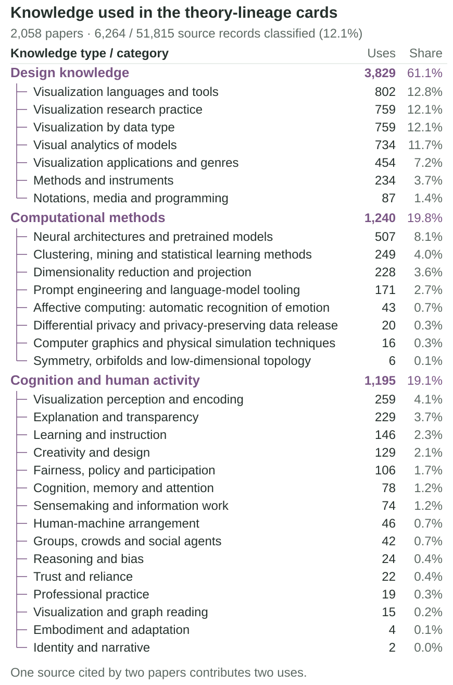
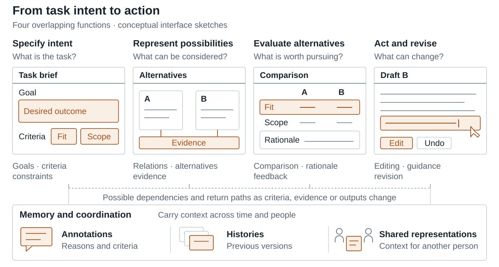

A landscape review ofsemantic scaffolding for learning
Q. How is semantic scaffolding designed, and what do studies find about work and learning?
Semantic scaffolding is designed structures with task meaning that a person inspects or acts through. We examine how AI interfaces provide that support and what evaluations establish about performance and learning.
Sirui Tao · Steven P. DowUniversity of California San DiegoWorking draft
ElementsEuclid · c. 300 BCE · AlexandriaProof as a form: state the definitions, then earn everything else.
Al-jabral-Khwarizmi · c. 820 · BaghdadSolving for the unknown, and the word algebra along with it.
Nine Chapters on the Mathematical ArtAnonymous · c. 100 · ChinaTwo hundred and forty-six problems, and the methods behind them.
On the Sphere and the CylinderArchimedes · c. 225 BCE · SyracuseThe volume of a sphere, by weighing slices against each other.
ConicsApollonius of Perga · c. 200 BCE · AlexandriaEllipse, parabola, hyperbola -- named and worked out.
ArithmeticaDiophantus · c. 250 · AlexandriaWhole-number solutions, and the margin Fermat later ran out of.
AryabhatiyaAryabhata · 499 · KusumapuraAstronomy in verse, with a sine table and a very good pi.
BrahmasphutasiddhantaBrahmagupta · 628 · BhinmalZero given arithmetic, and negative numbers given a meaning.
AlmagestClaudius Ptolemy · c. 150 · AlexandriaThe sky predicted for fourteen centuries, on a model that was wrong.
Book of OpticsIbn al-Haytham · c. 1021 · CairoLight travels to the eye, not from it -- and it was tested.
De revolutionibusNicolaus Copernicus · 1543 · FromborkThe Earth moved, in a book published as its author was dying.
Astronomia novaJohannes Kepler · 1609 · PragueOrbits are ellipses -- found by refusing to round the data off.
Dialogue Concerning Two World SystemsGalileo Galilei · 1632 · FlorenceTwo systems argued by three characters, one of them a fool.
Two New SciencesGalileo Galilei · 1638 · LeidenMotion and strength of materials, written under house arrest.
Treatise on LightChristiaan Huygens · 1690 · The HagueLight as a wave, a century and a half before anyone could prove it.
PrincipiaIsaac Newton · 1687 · LondonOne law for the apple and the moon, and the mathematics to run it.
Enquiry into PlantsTheophrastus · c. 300 BCE · AthensBotany begun, by someone who looked at plants instead of citing them.
MicrographiaRobert Hooke · 1665 · LondonThe first look through a microscope, and the word cell.
LettersAntonie van Leeuwenhoek · 1676 · DelftA draper's lenses find a whole living world in a drop of water.
Systema NaturaeCarl Linnaeus · 1735 · LeidenTwo names for every living thing, and the habit has stuck.
Histoire naturelleComte de Buffon · 1749 · ParisThirty-six volumes, and the first serious hint the Earth is old.
Theory of the EarthJames Hutton · 1795 · EdinburghNo vestige of a beginning: deep time argued from rock.
Philosophie zoologiqueJean-Baptiste Lamarck · 1809 · ParisSpecies change -- with a mechanism that turned out to be wrong.
Le regne animalGeorges Cuvier · 1817 · ParisComparative anatomy, and the discovery that species go extinct.
Posterior AnalyticsAristotle · c. 340 BCE · AthensWhat it takes for a claim to count as known rather than merely believed.
Novum OrganumFrancis Bacon · 1620 · LondonMethod against authority, and a list of the ways minds go wrong.
Discourse on MethodRene Descartes · 1637 · LeidenDoubt everything, then rebuild -- and the rebuilding is the hard part.
Essay on Human UnderstandingJohn Locke · 1689 · LondonWhere ideas come from, if they do not come with us.
EnquiryDavid Hume · 1748 · EdinburghWhy no number of observations entitles you to the next one.
Critique of Pure ReasonImmanuel Kant · 1781 · KonigsbergWhat the mind must supply before experience can be experience at all.
A System of LogicJohn Stuart Mill · 1843 · LondonInduction defended, and rules for telling a cause from a companion.
Illustrations of the Logic of ScienceC. S. Peirce · 1878 · Cambridge, Mass.Belief as what settles doubt, and inquiry as how it settles.
RepublicPlato · c. 375 BCE · AthensJustice defined by building a city to see where it would have to live.
PoliticsAristotle · c. 335 BCE · AthensConstitutions compared by someone who had collected a hundred and fifty.
AnalectsConfucius · c. 400 BCE · LuGovernment as a problem of character, recorded by students.
The Art of WarSun Tzu · c. 500 BCE · WuWinning without fighting, in thirteen very short chapters.
ArthashastraKautilya · c. 300 BCE · MagadhaStatecraft without illusions, down to the running of the spies.
MuqaddimahIbn Khaldun · 1377 · TunisWhy dynasties rise and rot, argued as a science of society.
The PrinceNiccolo Machiavelli · 1532 · FlorenceHow power is actually kept, written by a man out of a job.
LeviathanThomas Hobbes · 1651 · LondonThe sovereign as the price of not living in fear of everyone.
The IliadHomer · c. 750 BCE · IoniaNine days of anger, and the whole war implied around it.
The OdysseyHomer · c. 725 BCE · IoniaA man ten years late home, and every kind of delay.
The Epic of GilgameshAnonymous · c. 1800 BCE · UrukThe oldest story we have, and it is about a friend dying.
RamayanaValmiki · c. 400 BCE · IndiaExile, abduction, war and return, in twenty-four thousand verses.
MahabharataVyasa · c. 300 BCE · IndiaA family quarrel that takes in everything anyone knew.
AeneidVirgil · 19 BCE · RomeA founding myth written to order, and better than the order deserved.
MetamorphosesOvid · 8 · RomeTwo hundred and fifty stories, every one of them a change of shape.
ShakuntalaKalidasa · c. 400 · UjjainA ring lost in a river, and a king who forgets his wife.
Notes on the Analytical EngineAda Lovelace · 1843 · LondonThe first program, and the first doubt about machine originality.
Economy of MachineryCharles Babbage · 1832 · LondonManufacturing analysed as computation, by the man building an engine.
On Computable NumbersAlan Turing · 1936 · CambridgeA machine defined precisely enough to prove what it cannot do.
A Mathematical Theory of CommunicationClaude Shannon · 1948 · Murray HillInformation given a unit, and noise given a limit.
First Draft of a Report on the EDVACJohn von Neumann · 1945 · PhiladelphiaProgram and data in the same memory -- still the design.
CyberneticsNorbert Wiener · 1948 · Cambridge, Mass.Control and communication treated as one subject, in animal and machine.
As We May ThinkVannevar Bush · 1945 · WashingtonA desk that follows associative trails -- written before the transistor.
An Unsolvable ProblemAlonzo Church · 1936 · PrincetonThe lambda calculus, and the same limit reached by another road.
The HistoriesHerodotus · c. 430 BCE · HalicarnassusEnquiry as a genre, digressions included and defended.
The Peloponnesian WarThucydides · c. 400 BCE · AthensWritten for people who would face the same choices, without the gods.
AnabasisXenophon · c. 370 BCE · AthensTen thousand men getting home, reported by one of them.
Records of the Grand HistorianSima Qian · c. 94 BCE · Chang-anTwo thousand years of China, arranged by lives as well as reigns.
History of RomeLivy · c. 9 BCE · RomeThe republic told as a moral education, with the legends kept in.
AnnalsTacitus · c. 117 · RomeEmpire under the emperors, in the driest possible tone.
Parallel LivesPlutarch · c. 100 · ChaeroneaGreeks and Romans paired, and character treated as the evidence.
Ecclesiastical HistoryBede · 731 · JarrowA nation given a written past, with its sources named.
On ArchitectureVitruvius · c. 25 BCE · RomeFirmness, commodity and delight, and the only such book to survive.
On PaintingLeon Battista Alberti · 1435 · FlorencePerspective written down as a procedure anyone could follow.
NotebooksLeonardo da Vinci · c. 1500 · MilanEverything he looked at, mirror-written and never organised.
Four Books on Human ProportionAlbrecht Durer · 1528 · NurembergThe body measured, so it could be drawn without a model.
Lives of the ArtistsGiorgio Vasari · 1550 · FlorenceArt history invented, with the author own school coming out well.
Four Books of ArchitectureAndrea Palladio · 1570 · VenicePlans and elevations, and three centuries of imitation.
Le istitutioni harmonicheGioseffo Zarlino · 1558 · VeniceHarmony given rules and a reason, at the point tonality is forming.
Gradus ad ParnassumJohann Fux · 1725 · ViennaCounterpoint taught in species -- the book Haydn and Mozart used.
The Hippocratic CorpusHippocrates · c. 400 BCE · KosObservation over omen, and the beginning of a professional obligation.
On the Usefulness of the PartsGalen · c. 170 · RomeAnatomy from animals, and fourteen centuries of taking his word.
Sushruta SamhitaSushruta · c. 600 BCE · IndiaSurgery described in detail, reconstructive procedures included.
The Canon of MedicineIbn Sina · 1025 · IsfahanThe standard text from Bukhara to Bologna for six hundred years.
Doubts about Galenal-Razi · c. 900 · BaghdadThe authority checked against cases, and found wanting.
De humani corporis fabricaAndreas Vesalius · 1543 · PaduaThe body drawn from the body, and Galen corrected in public.
De motu cordisWilliam Harvey · 1628 · LondonThe blood goes round, proved by measuring how much there is.
Observationes MedicaeThomas Sydenham · 1676 · LondonDiseases described as species, from watching them run their course.
The review at a glance. Selected card counts, 26 September 2026.Select an area to read more. Hover or focus for a preview.Open full size ↗
Scroll across the three panels →
What carries forward
New tools. Familiar work of understanding.
Images, conversation, writing, and linked sources give people ways to think together. Generative AI can also compose and revise the representation during use.
Visual representationMake ideas visible
Spoken languageRespond to a question
Written languagePreserve reasoning
Networked knowledgeConnect sources
Generative AIGenerate and revise
These forms coexist. The question is how each helps a person inspect, question, and act on meaning. Theoretical foundations ↗
What makes it semantic scaffolding?
Something to think with. Something the person can do.
A scaffold makes task-relevant concepts, relationships, or reasoning available to work with. Its value depends on how people use that support.
A concrete design example · Graphologue
Turn an explanation into relationships you can explore.
A reader selects a concept, asks for an explanation, and inspects a new branch of related concepts. The representation gives the reader a specific next action.
Concepts, relationships, examples, plans, or alternatives.
Activity
What does the person do?
Inspect, compare, explain, practice, check, or revise.
Evidence
What changes for them?
Assess the process, the resulting work, and learning separately.
A better result with a tool does not by itself show learning. Assessment must specify the task, timing, comparison, and help still available. Performance and learning ↗
What work and capabilities does research support, and how is this changing?
GenAI papers emphasize creating, editing, and repairing. The supplied material changes what people compose and judge.
Context alone can hide a change in the mix of papers.
Programming accounts for 5.5% of GenAI papers and 7.8% of traditional AI/ML papers when all years are pooled. The year- and venue-adjusted comparison is +0.9 percentage points (95% CI -0.7 to +2.6). The adjusted interval includes zero.
Adjusted comparisons: 2019–2025. Descriptive associations in the coded corpus; they do not establish learning effects.
GenAI papers more often describe creating and revising artifacts.
After accounting for year and venue, the difference for creating, editing, and repairing artifacts is +11.0 percentage points (95% CI +5.6 to +16.4). Its direction and support after multiple-test correction persist in both sensitivity windows.
Adjusted comparisons: 2019–2025. Descriptive associations in the coded corpus; they do not establish learning effects.
AI technologies by year
3,447 classified papers · bar height shows volume; percentages show composition
GenAITraditional AI/ML
Scroll to see all years →
GenAI includes hybrids and earlier generators. * 2026 through 16 July; September update pending.
Work delegated to tools and retained by people
Bar length: number of papers · percentages use each field’s coded papers
Delegated to tools
3,012 coded papers
0400800
Evaluating and classifying514 · 17.1%
Representing and transforming information441 · 14.6%
Calculating and modelling380 · 12.6%
Generating new artifacts271 · 9.0%
Comparing and finding patterns261 · 8.7%
Recognising and extracting information258 · 8.6%
Generating responses and revisions204 · 6.8%
Selecting and recommending174 · 5.8%
Guiding the work155 · 5.1%
Searching and retrieving information121 · 4.0%
Mediating communication66 · 2.2%
Executing actions64 · 2.1%
Storing and recalling information61 · 2.0%
Tracking activity and progress35 · 1.2%
Retained by people
3,523 coded papers
0400800
Deciding and authorising726 · 20.6%
Creating and carrying out tasks588 · 16.7%
Specifying goals and inputs434 · 12.3%
Interpreting and explaining results410 · 11.6%
Checking and verifying outputs306 · 8.7%
Editing and correcting outputs254 · 7.2%
Training and improving the system215 · 6.1%
Controlling and refining the process212 · 6.0%
Communicating and taking responsibility159 · 4.5%
Applying expertise and context135 · 3.8%
Learning and reflecting56 · 1.6%
Supervising the system16 · 0.5%
Counts use all papers coded for each field; roles can overlap.
Writing from examples differs from revising a draft. CorpusStudio supplies examples that authors write from; ABScribe supplies passages they select and revise. A design must specify which composition and judgment it leaves to the person. Read the workflow comparison →
Workflow: how the work changes
The most frequent descriptions concern a change in activity, such as reading a new representation or steering iteratively. Automation is one kind of change. These descriptions do not measure time saved.
Cognition: what is delegated and retained
Cognitive work
Which cognitive operations move into the tool, and which stay with people?
Judgment appears on both sides. The profiles distinguish the operations being described; a shared label does not mean the same decision was transferred.
Delegated to the tool
2,436 papers · complete field assignments
Computation and judgement724 · 29.7%
Evaluation and judgement404
Calculation and modelling320
Representation and translation627 · 25.7%
Representing and translating400
Comparison and pattern finding227
Decision, guidance and action374 · 15.4%
Decision and selection139
Process guidance122
Execution and manipulation69
Communication and coordination44
Perception, search and memory373 · 15.3%
Perception and extraction179
Retrieval and search99
Memory and record-keeping67
Monitoring and tracking28
Content generation328 · 13.5%
Generating new artifacts183
Generating responses and revisions145
Offloading that failed or was withheld7 · 0.3%
Offloading that failed or was withheld7
Nothing offloaded, or not stated3 · 0.1%
Nothing offloaded, or not stated3
Retained by the person
2,972 papers · complete field assignments
Judgement and decision1,449 · 48.8%
Deciding and authorising585
Interpreting397
Setting direction339
Bringing domain knowledge128
Doing and revising the work1,043 · 35.1%
Doing the work476
Repairing and revising213
Improving the system193
Steering the loop161
Checking the output260 · 8.7%
Checking the output260
Responsibility, social and self-directed work214 · 7.2%
Responsibility and social work152
Self-regulation and learning62
Not stated6 · 0.2%
Not stated6
Separate field populations: 2,436 delegated-work papers and 2,972 retained-work papers. These are descriptions of roles, not matched flows or amounts of effort. Expand a family for its categories and paper counts.
How are scaffolds designed, and what do studies establish?
User control is more common in GenAI papers. What people can revise and preserve matters alongside having a control.
Which papers and what does p test?
Papers in this family comparison
Selection
Papers
Quantitatively coded paper groups
4,086
With usable mechanism-family coding
3,385
Also classified by AI technology
2,845
Within complete years 2019–2025
2,444
The p-values test the GenAI–traditional difference after accounting for publication year and venue. They do not test annual change. Intervals are pointwise 95% confidence intervals; p-values use Holm correction across all 51 technology contrasts. The 2023–2025 and partial-2026 sensitivity windows repeat the group comparison.
Control is a recurring difference in the coded papers.
Among papers with usable coding, GenAI-classified papers more often describe user control and expression (+13.7 percentage points after accounting for year and venue; 95% CI 8.6 to 18.7). On the same 2,022 papers in shared year–venue cells, the gap is +12.5 with overlap weights and +7.8 when venues receive equal weight.
Adjusted comparisons: 2019–2025. Descriptive associations in the coded corpus; they do not establish learning effects.
Look beneath the broad control label.
At least two control categories occur in 215/1,069 GenAI-classified papers (20.1%) and 129/1,369 traditional AI/ML papers (9.4%). This counts controls that a paper describes together, not controls that people used together. Candidate choice is more sensitive to weighting: on its 2,016 shared-cell papers, the corresponding gaps are +7.2 and -0.04 points. The GenAI excess disappears when each venue receives equal weight. Equal venue weighting gives sparse cells much of the weight.
Adjusted comparisons: 2019–2025. Descriptive associations in the coded corpus; they do not establish learning effects.
An edit must survive the next generation. Plume lets writers preserve selected text while regenerating its surroundings. Keeping an earlier version and preserving edits in a new version are different design choices. Read the contrasting designs →
Five families, eighteen categories2,412 papers with complete assignments
Organisation and comparison1,741 papers · 72.2%
Organising and structuring1,071 · 44.4%
relational or network map
Represents entities and the links among them: dependency maps, causal graphs, stakeholder relations, co-occurrence networks, concept maps. The operation is exposing relations. Not similarity grouping (FC016), not containment (FC013).
Holds two or more representations, views or modal spaces in registered alignment so the same thing can be found in each: linked views, coordinated multiview, cross-view identity cues, correspondence specification. Not sensory re-encoding (FC084).
Organises material along time: timelines, event sequencing, temporal maps, playback position, calendar structure, temporal pattern views. Arranging in time, not comparing across time (FC028) and not history replay (FC081).
Organises meaning by position in a space: layout specification, spatial grouping, maps of place, spatial overviews, context-preserving arrangement. Not a similarity projection whose point is grouping (FC016).
Breaks a task, artifact, claim or process into constituent units so each can be handled: procedural decomposition, functional decomposition, decomposed claims, sub-goal structuring. Not hierarchy as a browsing structure (FC013).
Shows quantitative structure over a population: distributions, frequencies, prevalence, correlations, ranges, central estimates, statistical ensembles. Not uncertainty about one output (FC004), not subgroup contrast (FC027).
Compresses a body of material into a single inspectable whole: corpus overviews, dataset landscapes, at-a-glance summaries, aggregate visualisations. Gives orientation over many items. Not condensation of one text (FC107), not a statistical distribution (FC023).
Gathers items by likeness into groups, neighbourhoods or a similarity space: clusters, similarity overviews, semantic grouping of work items, redundancy-aware source grouping. Not user-defined category schemes (FC017).
Lets meaning be viewed at chosen levels of granularity or abstraction, coarse to fine, with focus and context preserved: adjustable granularity, multiscale views, progressive-detail navigation. Not staged release of support (FC100).
Supplies a bounded set of meaning categories, codes, tags or terms to think and speak with: coding frameworks, annotation vocabularies, shared terminology, activity-state vocabularies. Supplying the scheme, not applying it (FC105, FC106).
Arranges meaning in levels of containment: taxonomies, trees, nested goals, part-whole hierarchies, hierarchical navigation. The organising relation is subordination. Not levels of detail on one object (FC019), not flat clustering (FC016).
The person applies or builds meaning categories over material: qualitative coding, sorting into concepts, boundary construction, category refinement, human labelling workflows.
Places two or more candidates, outputs, models or designs together for judgment: comparison views, juxtaposition, alternative-output inspection, comparison-frame alignment. Not counterfactual variation (FC025), not peer benchmarking (FC026).
Shows what would differ under a change: counterfactuals, before/after, contrastive explanation, sensitivity to an edit, consequence of a revision already made. The comparand is a variant of the same thing.
Positions a person, item or result against a norm, reference standard, expert model or peer group: peer comparison, relative quality benchmarks, comparison to a gold reference, social-proof framing.
Compares states across time to reveal trend, growth or drift: trajectories, temporal trend comparison, progress over time, model-quality over versions, longitudinal change. Not arrangement in time (FC020).
Contrasts defined groups or cohorts against each other: subgroup comparison, fairness disparity views, cohort analogues, group-level perspective distributions, intersectional slices. Not a single distribution (FC023).
Orders items so the important ones come first: triage rankings, risk salience ordering, prioritised candidates, novelty-directed ordering, ranked lists. Ordering, not filtering out (FC029) and not pointing at one item (FC043).
Moves a person through an information structure and keeps them oriented: navigable overviews, guided traversal, jump-to-position, coordinated navigation, exploratory paths. Not drill-down to evidence (FC010).
Pulls in an explanation, definition, record or external source at the moment of need, without leaving the task: contextual lookup, external-evidence access, detail on request, cross-modal reference access.
Narrows a body of material to what matters here: semantic filtering, personalised information filtering, relevance rules, noise suppression, corpus filtering. The operation is exclusion by relevance, not ordering (FC032).
Bounds what an analysis, audit or view covers: scope configuration, subset selection, extent constraints, evidence-scope control, scope relaxation. Setting the frame of attention rather than ranking inside it.
Lets a person build, edit or inspect the query that retrieves material: editable query representations, faceted query building, query expansion, visual query steering, attribute-guided search.
Holds or returns something the person would otherwise forget: memory aids, recall cues, curated personal memory, retained context, reminders of prior activity, shared conversational memory.
Puts something held in a person's head, or implicit in practice, into an inspectable external form: externalised concepts, preferences, strategies, expert knowledge, task state made visible outside the mind.
Marks meaning onto existing material in place: notes, tags, highlights, role labels, interpretive comments, marks on media or an artifact. Attaching to material, not building a separate structure (FC077).
Revisits past states as a traversable record: playback of a process, generation-history navigation, session replay, branch histories, interaction-history views. Revisiting for sensemaking, not audit provenance (FC012).
A holding surface where material can be gathered, arranged and rearranged during the work: canvases, boards, curation workspaces, staging areas for ideas or evidence. The workspace itself is the facet.
Records work, speech, observation or events in the moment for later use: live capture notation, in-situ recording, decision-intent capture, structured field capture, capture coordination.
Points the person at where to look: highlighting, salience cues, anomaly flags, attention overlays, localisation of the thing that matters. Directs gaze, does not prescribe an action (FC040).
Shows what would follow from a contemplated action before it is taken: outcome previews, simulated results of a choice, candidate-remedy previews, authored-consequence previews. Prospective, not retrospective contrast (FC025).
Proposes what to do next in the work: next-step suggestions, strategy recommendations, coordination directives, action prompts, continuation of a plan. Forward-looking advice not tied to a detected defect (FC041).
Tells the person how to fix an identified problem: repair hints, revision guidance, remediation actions, corrective suggestions, improvement guidance tied to a metric or violation. Diagnosis alone is FC063.
Provides the steps for performing a procedure: task-sequence guides, stepwise procedures, in-situ action guidance, demonstrated procedures, embedded task instructions. Instruction for doing, not a worked exemplar to imitate (FC102).
Suggests specific content, resources, precedents, people or items to take up, often with a justification: recommended examples, precedent suggestions, resource curation for action, recommendation explanations.
Signals hazard, harm, violation or impending breakdown so the person can hold back: risk annotations, hazard alerts, validity warnings, breakdown warnings, safety flags. Warning, not diagnosis of quality (FC063).
Identifies and localises a fault, misconception or quality defect in the person's or system's work: quality diagnosis, error localisation, misconception classification, bias localisation, issue surfacing. Naming the problem, not fixing it (FC041).
Reports the result of what the person did so they can adjust: performance feedback, outcome-error interpretation, enactment feedback, action-evaluation cues, response to an attempt. Feedback on doing, not a verdict on quality (FC064).
Shows how far along the person or work is against a goal or plan: progress maps, completion indicators, coverage feedback, readiness displays, longitudinal progress. Progress toward a target, not live system state (FC006).
Structures the act of checking an output or claim against ground truth, a rule or a sample: verification workflows, output checks, presence checking, validation against domain rules, confirmation prompts.
Returns an appraisal on criteria: quality scores, critiques, multi-criteria evaluations, holistic match judgments, evaluative advice. The output is a verdict about worth.
Attaches a discrete status to items: correct/incorrect marks, violation labels, flags, decision-status cues, binary diagnostic indicators, editable-status framing. A compact per-item state token.
Supplies a concrete instance done well, to study or imitate: worked examples, exemplars, model answers, demonstration cases, reference performances, illustrative applications.
Explains what something in the domain means: definitions, concept clarification, terminology explanation, domain background, explanatory content about the subject rather than about the system (FC001).
Information is released in stages, on request or as readiness allows: progressive disclosure, staged revelation, detail on demand, layered explanation depth. About release schedule, not level of abstraction (FC019).
The amount or intensity of help changes with the person's state or over time: fading scaffolds, difficulty progression, contingent pacing of support, adaptive assistance levels, timing of when help arrives.
Situates a newcomer in a task, interface or collaboration before real work: orientation overviews, onboarding tours, task framing at the outset, preparatory instruction, what-this-is explanations.
Organises a sequence of learning or practice over sessions: curricula, learning pathways, practice routing, prerequisite structure, personalised progression through content.
Meaning made deliberately less available: faded or withdrawn help, choice-limiting structures, display reduction, added friction, bounded responses, suppressed detail. Negative content kept as its own operation.
Work is organised into ordered stages that unfold in sequence: staged workflows, phase structure, pipelines, sequenced task progression, structured multi-step processes. The operation is imposing order on the work.
The process pauses for a person to approve, confirm or take responsibility before continuing: accountability checkpoints, review gates, confirmation steps, deliberate friction before a consequential act.
Coordinates which action, tool, resource or participant is engaged when: action routing, orchestration of components, turn allocation, delegation of sensing, automation of a workflow step.
Detects and mends a breakdown so the interaction can continue: conversational repair, recognition-error recovery, redirection after failure, re-entry after stalling, clarification of misunderstanding.
Work cycles through produce-inspect-revise repeatedly: iterative refinement, feedback loops, trial-and-revision cycles, repeated curation passes. The operation is recurrence rather than linear sequence (FC069).
Assigns distinct parts of the work to different parties, human or machine: human-AI task splits, role separation, distributed expertise, staged division of diagnostic labour, complementary capability allocation.
Passes accumulated work, context or findings from one party or stage to the next in usable form: handoff records, discovery handoffs, cross-stage integration, transferable analysis packages.
Work state is held so it can be left and returned to: resumable sessions, persistent state overviews, deferred-attention parking, analysis-state management across sessions.
Prompts the person to examine their own reasoning, assumptions, bias or experience: reflection prompts, self-assessment triggers, bias-challenging interventions, retrospective self-monitoring.
Shapes how the person interrogates the material: question guides, hypothesis prompts, critical checking prompts, inquiry strategy cues, coverage prompts that push toward unexamined ground.
The system draws out what the person wants or needs before acting: intent elicitation, information-need probing, preference elicitation, explanation-need questions, requirement gathering prompts.
Draws out the person's account, strategy or explanation in their own words: narrative elicitation, verbalised reasoning, rationale capture before a decision, continuation elicitation, articulation prompts.
The system justifies a particular output, decision or prediction so a person can judge why it came out that way. Includes local explanation, decision-path and rationale displays. Not a stepwise trace of the computation (FC008) and not a global behaviour summary (FC003).
Shows what the system or a shared process is doing right now: workflow state, conversational state, latency, pending work, agent activity. State of the running process, not of a stored artifact. Not progress against a goal (FC066).
Makes doubt legible: confidence scores, error bars, ambiguity flags, reliability cues, uncertainty-annotated results. The operation is exposing how much to trust. Not the distribution of data itself (FC023).
Shows which inputs, features, regions or components drove a specific output, as weights, overlays, highlights or ranked evidence. Attribution of causal share to parts. Not general rationale prose (FC001), not attention cueing for the person's own task (FC043).
Characterises how a model or algorithm behaves across many cases: population-level patterns, learned rules, class relations, aggregate influence. Not a single output's justification (FC001) and not a data overview about the world (FC014).
Lays out the sequence of steps by which a result was produced so it can be followed or audited: reasoning traces, layerwise process traces, execution provenance, decision-process exposition. Not the conclusion's justification alone (FC001).
Declares what the system is, can and cannot do, where its knowledge stops, or that content is machine-made: model-boundary disclosure, AI-use status, provenance-of-generation marking, epistemic status. Not per-output confidence (FC004).
Renders otherwise hidden internal structure inspectable: latent spaces, learned concepts, embeddings, hidden variables, layer activations, model-state distributions. Not the reasoning steps (FC008), not the rationale for one output (FC001).
Ties a claim, answer or derived item back to the material it came from: citations, source grounding, attribution to a document, speaker or record. The operation is anchoring meaning in its origin. Not drill-down through an aggregate (FC010).
Records what the person or pipeline did so the derivation of a work product can be reviewed, reproduced or recovered: analytic provenance, operation capture, versioned lineage, governance records. Not replay for sensemaking (FC081).
Assembles supporting or contradicting evidence so a person can check a claim or output: evidence tables, claim-evidence confrontation, cross-checking, sufficiency rationale. Emphasis on adjudicating truth, not on tracing origin (FC009).
Moves from a summary, cluster or pattern to the individual cases beneath it, and back. Includes overview-to-evidence tracing and instance-grounding drill-down. Not general navigation (FC034), not a static citation (FC009).
Chooses how meaning maps onto visual form: colour, marks, glyphs, encoding choices, rendering cues, visual abstraction of a property. About the encoding decision, not the structure encoded (FC013-FC023).
Meaning is carried by the body or a physical object: gesture, movement, physical construction, enactment of an abstract process, proprioceptive and tangible representation, embodied demonstration.
Recasts meaning in a figurative or symbolic register so it can be grasped differently: metaphors, analogies across domains, symbolic cues, anthropomorphic or narrative stand-ins for abstract state.
Adapts form so it can be perceived or understood by this person: accessibility authoring, readability and register adaptation, perceptual simplification, decluttering, plain restatement for a lay audience.
Carries meaning from one perceptual channel into another, or composes several: cross-modal mapping, multimodal explanation composition, audio-to-visual and visual-to-tactile translation, modality restoration.
Renders meaning in sound, touch or force: sonification, auditory state encoding, haptic and tactile representation, vibration cues. The perceptual channel is the operation.
Puts non-verbal content into words: scene and image description, verbalised visual evidence, spoken account of a chart or space, described layout for non-visual access.
Reduces content to its gist: summaries, syntheses of sources, thematic condensation, recaps, compression of repeated structure. Condensing content, not an overview of a whole collection's structure (FC014).
The system assigns meaning categories, labels or interpretations to content: automatic tagging, generated labels for clusters or patterns, machine classification of behaviour, inferred themes.
Recasts content in a different representational kind while keeping its meaning: prose to structure, qualitative to quantitative, narrative to work items, schema-guided substitution, format conversion.
Assembles what is known about one entity, concept or case into a single characterisation: entity profiles, case summaries, concept browsers, per-item dossiers drawn from many sources.
The person states conditions the result must satisfy: explicit constraints, behavioural rules, conditional states, relevance rules, regional or structural restrictions authored by the user.
The person defines or weights the criteria by which things will be judged or ranked: rubrics, decision criteria, criterion weighting, evaluation metrics, quality standards made explicit and editable.
The person writes something the machine will run or enforce: notation, code, executable specifications, declarative layout languages, visual programs, formal operationalisations of a property.
Input is shaped by a provided structure: templates, fields, schemas, question sets, framing prompts that constrain what the person supplies. The structure carries the meaning of what is asked for.
Intent is conveyed by showing instances rather than stating rules: example-based specification, programming by demonstration, exemplar-defined categories, reference images or cases as the spec.
The person states goals, preferences or tasks in ordinary language or dialogue and the system takes it as the spec: natural-language goals, conversational preference setting, dialogic goal construction.
What the system produced is offered as a draft the person may accept, correct or override: editable generated drafts, correctable decisions, reversible AI judgments, human-in-the-loop correction of machine results.
Sets how the system will operate: configurable criteria, settings, representation-format choices, view composition, feature toggles, semantics of a display. Persistent configuration, not moment-to-moment steering (FC051).
The person redirects a generation, conversation or analysis while it runs: mid-course steering, relevance feedback, preference nudges during production, redirecting a dialogue, scoped workflow steering.
The person acts on the represented meaning itself by handling it: dragging, sketching, moving, reshaping, in-place editing of the representation, tangible or spatial manipulation. Acting on meaning, not organising it (FC013-FC022).
Graded control over an amount: sliders, dials, weights, continuous steering magnitudes, adjustable thresholds and levels. The control surface is a quantity, not a discrete option (FC035) or a settings panel (FC050).
Actions can be undone, branched or tried without commitment: reversible checkpoints, non-destructive experimentation, versioned recovery, low-commitment trials, alternative-history branches.
Represents the space of possibilities as a navigable terrain: design spaces, parameter-space maps, solution-space navigation, trade-off surfaces, quality landscapes, candidate-space overviews.
Produces multiple variant outputs so the person can explore possibility rather than accept one answer: generated variations, alternative drafts, sampled possibilities, refinement option sets, ideation output.
Proposes the next piece of the person's own artifact in place: autocompletion, suggested continuations, inline rewrites, relational completion, drafting the next sentence or element.
The person sets bounds that the generator must respect: generative constraints, constrained ideation, constraint-aware option generation, sketch- or rule-limited synthesis. Constraint on producing, not on specifying a task (FC055).
The person perturbs a system or model and observes the response to learn how it works: interactive probes, black-box behaviour testing, component ablation, parameter-effect exploration, impact probing.
A safe stand-in world or partner for practising something before doing it for real: rehearsal environments, practice scripts, simulated collaborators or clients, role-play for skill.
Positions the person to see from another vantage: audience perspective on a draft, other-role viewpoints, reframed spatial or conceptual standpoints, interpretive lenses adopted deliberately.
A representation several people build and hold together: shared workspaces, jointly authored maps, collective artifacts, evolving shared case context. Shared authorship is the operation.
Organises how people put views to each other and reach a position: structured argument exchange, perspective confrontation, collective reflection, joint appraisal and alignment procedures.
Governs what about a person or their data is revealed and to whom: consent controls, privacy-preserving generalisation, selective surfacing, sensing delegation, disclosure timing and trade-off settings.
Assigns an identity or role to a participant or agent that shapes how the exchange proceeds: persona-mediated dialogue, scripted roles, declared interlocutor identity, multi-agent viewpoint casts.
In the subgoal-label experiment, everyone created labels. What differed was which labels remained available during later practice. Subsequent use matters alongside authorship.
CodeVoyager improved code comprehension without a statistically detected gain in assisted task completion. FeedbackWriter improved revisions without a detected knowledge-test advantage.
Perceived learning, confidence in ability, self-efficacy
For each measure, record the construct, instrument or scoring criteria, rater, comparison, timing, and available assistance. An external rating remains a judgment; a numeric self-rating remains self-report. Scoring a finished artifact later does not make it a learning assessment.
Explore prior knowledge
What prior knowledge contributes to a design
4,126 classified source uses across 688 papers. Open a topic to see concepts, cited works and source passages.
Design knowledge2,578 uses · 62.5%Visualization languages and tools · 546 uses
546 source uses · 4 codes
Codes within this category identify more specific concepts and methods.
Passage in the reviewed paper · PDF p. 3 · Targeted design or measurement operationalization passage
ter for “sanity checking” datasets for ML purposes. Closer to our school degree but had no exposure to data-related topics. Ages
work, McNutt and Kindlmann [MK18], drawing on existing visual- ranged from 21-30 years. Interviews lasted 35–45 five minutes, and
izatio
Read the paper’s use of prior work in context
The paper connects visualization literacy and rhetoric, chart-error validation, software linting, in-situ debugging, cognitive dimensions, sketchy rendering, and educational scaffolding. It operationalizes that lineage as unobtrusive error marks attached directly to chart elements and evaluates immediate error recognition and explanation preferences.
Passage in the reviewed paper · PDF p. 3 · Targeted grammar, coding, coverage, diversity, and implication operationalization
details on demand” describes an explicit progression of interactions Zhou [GZ09] as a means for extracting common sequences of
performed when visually exploring data [Shn96]. Grammel et visualization interactions [GW09]. Battle and Scheidegger [BS21]
al. conducted a u
Read the paper’s use of prior work in context
The paper connects visualization task taxonomies, interaction provenance, qualitative coding, and formal-language theory. It operationalizes those lineages by casting primitive interactions as terminals, higher-level behaviors as non-terminals and regular-expression production rules, then evaluating mappings with coverage and diversity over three real log corpora.
Passage in the reviewed paper · PDF p. 7 · Targeted grammar, coding, coverage, diversity, and implication operationalization
consistent difference in coverage based on dataset, suggesting that
mars [SMWH17; Mac86], our analysis focuses on measuring the
for the taxonomies and datasets studied, coverage is inversely propor-
expressiveness of selected t
Read the paper’s use of prior work in context
The paper connects visualization task taxonomies, interaction provenance, qualitative coding, and formal-language theory. It operationalizes those lineages by casting primitive interactions as terminals, higher-level behaviors as non-terminals and regular-expression production rules, then evaluating mappings with coverage and diversity over three real log corpora.
Passage in the reviewed paper · PDF p. 3 · Targeted grammar, coding, coverage, diversity, and implication operationalization
Grammel et al. [GTS10], and Guo et al. [GGZL15]. Shneiderman’s the Tableau-focused taxonomy of Heer et al. [HMSA08]. Likewise,
information-seeking mantra: “overview first, zoom and filter, then Gotz & Wen use the interaction taxonomy proposed by Gotz &
details on demand
Read the paper’s use of prior work in context
The paper connects visualization task taxonomies, interaction provenance, qualitative coding, and formal-language theory. It operationalizes those lineages by casting primitive interactions as terminals, higher-level behaviors as non-terminals and regular-expression production rules, then evaluating mappings with coverage and diversity over three real log corpora.
Passage in the reviewed paper · PDF p. 7 · Targeted design or measurement operationalization passage
Annotation Accuracy. We evaluate the performance of T p annota- consuming. Retrieval is a fast way to validate those inspirations.
tion using ResNet50 architectures with different losses. As Table 2 Inspired by [BLBL22], two usage scenarios of chart retrieval are
lists, the best
Read the paper’s use of prior work in context
The paper connects chart-retrieval taxonomies, visualization attributes, example-based design, vision-language pretraining, attribute classifiers, and human query intent. It operationalizes the lineage as an annotation-and-retrieval workflow in which users selectively compose explicit chart attributes with an implicit text prompt.
Passage in the reviewed paper · PDF p. 3 · 3.1 Learning Objectives and Design Principles
visualization process. The Constructive Visualization paradigm [19]
Read the paper’s use of prior work in context
Construct-A-Vis has an explicit educational and interaction-design lineage. Constructionism and constructive visualization motivate active token-based construction; visualization-literacy work motivates explicit data-to-mark mappings; scaffolding, zone-of-proximal-development, and concreteness-fading research motivate non-prescriptive feedback and teacher-configurable progression. These commitments are operationalized in the free-form canvas, per-token encodings, feedback, and configurable abstraction. The qualitative study reveals processes and critical engagement but does not establish durable learning or transfer.
Passage in the reviewed paper · PDF p. 7 · 5.4 Enhance Discoverability
particular language structure in the system. System discoverability is Example Gallery: To demonstrate the usability of VisTalk, we pro-
considered an essential factor that improves the user experience [3, 56]. duce a variety of charts with example natural language utterances that
Read the paper’s use of prior work in context
The paper connects visualization-authoring grammars and tools, analysis-oriented visualization NLIs, ambiguity and pragmatic-interaction research, intent/slot sequence models, and recommendation/discoverability precedents. It operationalizes that lineage as reusable editing-action tuples, a three-stage learned interpreter, operation mappers, an Excel add-in, and VisTalk with chart recommendations, clickable ambiguity widgets, autocompletion, and iterative feedback.
Passage in the reviewed paper · PDF p. 5 · 5.1 In-context Data Entry Abstraction
the data attributes in a similar way to NL4DV [39]. Once we completed dataset from ∼400 unique workers. We further augment the dataset
Read the paper’s use of prior work in context
The paper connects visualization-authoring grammars and tools, analysis-oriented visualization NLIs, ambiguity and pragmatic-interaction research, intent/slot sequence models, and recommendation/discoverability precedents. It operationalizes that lineage as reusable editing-action tuples, a three-stage learned interpreter, operation mappers, an Excel add-in, and VisTalk with chart recommendations, clickable ambiguity widgets, autocompletion, and iterative feedback.
Passage in the reviewed paper · PDF p. 7 · 6.2 VisTalk
intents. Multimodal coreference resolution is an important task as users of chart recommendations [35, 52], In the above example, VisTalk
Read the paper’s use of prior work in context
The paper connects visualization-authoring grammars and tools, analysis-oriented visualization NLIs, ambiguity and pragmatic-interaction research, intent/slot sequence models, and recommendation/discoverability precedents. It operationalizes that lineage as reusable editing-action tuples, a three-stage learned interpreter, operation mappers, an Excel add-in, and VisTalk with chart recommendations, clickable ambiguity widgets, autocompletion, and iterative feedback.
Passage in the reviewed paper · PDF p. 3 · Targeted design or measurement operationalization passage
sociated errors, starting with a review of the literature on percep- ror expression, VisuaLint establishes a closeness of map-
tual studies, visualization systems [MWN∗ 19, SMWH16, MK18], ping [BBC∗ 01] that facilitates error awareness.
and widely-read,
Read the paper’s use of prior work in context
The paper connects visualization literacy and rhetoric, chart-error validation, software linting, in-situ debugging, cognitive dimensions, sketchy rendering, and educational scaffolding. It operationalizes that lineage as unobtrusive error marks attached directly to chart elements and evaluates immediate error recognition and explanation preferences.
Passage in the reviewed paper · PDF p. 6 · Targeted requirements, network, interface, case-study, and quantitative-evaluation operationalization
There are three ways to select subsets in the SP, as follows:
ten in JavaScript using D3 library [BOH11]) and sends back em-
1) Analysts can freely select subsets according to the distribution beddings. The Flask is used to transfer
Read the paper’s use of prior work in context
The paper links multidimensional exploration, dimensionality reduction, multi-view representation learning, overview-to-detail interaction, subset and subspace analysis, and visual pattern explanation. It enacts that lineage as an on-the-fly multi-subnet embedding plus a three-stage interface for partitioning, projected selection, and feature-card verification.
Passage in the reviewed paper · PDF p. 3 · Targeted grammar, coding, coverage, diversity, and implication operationalization
logs from a text document exploration tool [GGZL15]. Similarly,
Satyanarayan et al. [SMWH17] also use Yi et al. [YaKSJ07] to define – a set of terminal symbols Σ,
interaction categories to evaluate Vega-Lite. Battle and Heer [BH19] – a set of non-terminal symbols N, and
use a
Read the paper’s use of prior work in context
The paper connects visualization task taxonomies, interaction provenance, qualitative coding, and formal-language theory. It operationalizes those lineages by casting primitive interactions as terminals, higher-level behaviors as non-terminals and regular-expression production rules, then evaluating mappings with coverage and diversity over three real log corpora.
Passage in the reviewed paper · PDF p. 3 · Targeted design or measurement operationalization passage
ter for “sanity checking” datasets for ML purposes. Closer to our school degree but had no exposure to data-related topics. Ages
work, McNutt and Kindlmann [MK18], drawing on existing visual- ranged from 21-30 years. Interviews lasted 35–45 five minutes, and
izatio
Read the paper’s use of prior work in context
The paper connects visualization literacy and rhetoric, chart-error validation, software linting, in-situ debugging, cognitive dimensions, sketchy rendering, and educational scaffolding. It operationalizes that lineage as unobtrusive error marks attached directly to chart elements and evaluates immediate error recognition and explanation preferences.
Passage in the reviewed paper · PDF p. 6 · Targeted design or measurement operationalization passage
ple of tight linking between the data space and the model ety of classification techniques (e.g. SVM, random forest, k-means,
space [ZWM∗ 18, ACD∗ 15, RAL∗ 17]. etc.). Since these techniques have different properties and charac-
• G6: Transition seamlessl
Read the paper’s use of prior work in context
The paper links exploratory data analysis, visual-analytics sensemaking, human-centered machine learning, model steering, interpretability, and model comparison. It operationalizes that lineage as a seven-step, user-centered workflow in which editable problem cards, AutoML, metric-ranked candidates, and linked model/data views support consequential model selection.
Passage in the reviewed paper · PDF p. 6 · Targeted design or measurement operationalization passage
ple of tight linking between the data space and the model ety of classification techniques (e.g. SVM, random forest, k-means,
space [ZWM∗ 18, ACD∗ 15, RAL∗ 17]. etc.). Since these techniques have different properties and charac-
• G6: Transition seamlessl
Read the paper’s use of prior work in context
The paper links exploratory data analysis, visual-analytics sensemaking, human-centered machine learning, model steering, interpretability, and model comparison. It operationalizes that lineage as a seven-step, user-centered workflow in which editable problem cards, AutoML, metric-ranked candidates, and linked model/data views support consequential model selection.
Passage in the reviewed paper · PDF p. 6 · Targeted design or measurement operationalization passage
ple of tight linking between the data space and the model ety of classification techniques (e.g. SVM, random forest, k-means,
space [ZWM∗ 18, ACD∗ 15, RAL∗ 17]. etc.). Since these techniques have different properties and charac-
• G6: Transition seamlessl
Read the paper’s use of prior work in context
The paper links exploratory data analysis, visual-analytics sensemaking, human-centered machine learning, model steering, interpretability, and model comparison. It operationalizes that lineage as a seven-step, user-centered workflow in which editable problem cards, AutoML, metric-ranked candidates, and linked model/data views support consequential model selection.
Passage in the reviewed paper · PDF p. 3 · 3.2 Narrative-Guided RAG Pipeline
triggering a new inference cycle and generating a new set
Read the paper’s use of prior work in context
The paper combines interactive information retrieval, berrypicking, sensemaking, RAG, Bayesian relevance/user models, narrative modeling, value-of-information analysis, financial reporting, and human-AI scrutability. It operationalizes them as a thesis-claim-evidence Bayesian DAG, expected-impact ranking via KL divergence, narrative-guided retrieval, a three-panel interface, and an accept/reject feedback loop that updates probabilities and future suggestions.
Passage in the reviewed paper · PDF p. 5 · 4.2 Label Validity
guide human attention toward samples most in need of verification.
Read the paper’s use of prior work in context
The paper draws on visual analytics, temporal and domain-specific audio visualization, human-in-the-loop annotation, parallel-coordinate interaction, no-reference quality assessment, and audio-language modeling. It operationalizes selected parts as linked distribution and filtering views, confidence-directed label review, reversible provenance, portable processing specifications, and editable generated data-loader code.
Passage in the reviewed paper · PDF p. 10 · 5 Active Learning
sampling strategy. This strategy extends the previous sampling approach with
a distance-to-query and an uncertainty term. See Supplementary Figure S2
for a visual example. The distance-to-query term stands for the distance of a
wi
Read the paper’s use of prior work in context
The paper connects visual query systems, subjective similarity, relevance feedback, active learning, learned autoencoder representations, and interactive machine learning. It operationalizes that lineage through query-by-example, binary/inconclusive labeling, uncertainty-density-distance sampling, repeated random-forest retraining, linked query/list/embedding views, conflict cues, and progress metrics.
Passage in the reviewed paper · PDF p. 6 · Targeted design or measurement operationalization passage
ple of tight linking between the data space and the model ety of classification techniques (e.g. SVM, random forest, k-means,
space [ZWM∗ 18, ACD∗ 15, RAL∗ 17]. etc.). Since these techniques have different properties and charac-
• G6: Transition seamlessl
Read the paper’s use of prior work in context
The paper links exploratory data analysis, visual-analytics sensemaking, human-centered machine learning, model steering, interpretability, and model comparison. It operationalizes that lineage as a seven-step, user-centered workflow in which editable problem cards, AutoML, metric-ranked candidates, and linked model/data views support consequential model selection.
Passage in the reviewed paper · PDF p. 5 · 3 Diana
Users can interact with Diana via three interaction modalities:
Read the paper’s use of prior work in context
Diana grounds dashboard onboarding in situated help, staged onboarding models, multimodal visualization interaction, and hierarchical radial menus, then operationalizes them as user-invoked chat, speech, lasso anchoring, structured contextual help, and visual highlighting while preserving the user's analytical agency.
Passage in the reviewed paper · PDF p. 6 · Table 1 and 3.2 The PlaceWeave System in Action
Table 1: PlaceWeave design framework: how each DG is realized through user-facing affordances and where they appear in
Read the paper’s use of prior work in context
PlaceWeave operationalizes Ackerman's sociotechnical-gap and first-order-approximation framing, Gao et al.'s Localness Conceptual Framework, direct manipulation, sensemaking, and progressive disclosure. Those sources become explicit design goals, interface affordances, graph attributes, prompts, confidence and provenance views, spatial coupling, and a user-steerable planning workflow.
Passage in the reviewed paper · PDF p. 9 · 6.5 Visual Scent
auxiliary features using visual scent [86]: dots represent layer nor-
Read the paper’s use of prior work in context
Transformer Explainer combines conceptual grounding in interactive visual learning and mechanistic information flow with direct operationalization of Sankey-like token flow, progressive disclosure, animated computation, adjustable sampling, visual scent, and learning-oriented evaluation instruments.
Passage in the reviewed paper · PDF p. 5 · 3.3 Visual Decision Supports
survey by Oral et al. [63] highlights a broad spectrum
of visual decision support tools, ranging from basic information 4.2 Spatial Arrangement
visualizations to advanced AI-based suggestions [49]
Read the paper’s use of prior work in context
The paper connects appropriate-reliance, dual-process, visualization-decision, spatial-cognition, situated/embedded-visualization, and AR-wayfinding lineages to a controlled contrast between an egocentric 1:1 X-ray view and a layered 2D Minimap. Both expose four targets, walking-distance and queue evidence, and an unexplained 75%-accurate AI highlight. In 1,024 within-subject trials with 32 participants, X-ray reduced pointing error yet lowered decision accuracy and appropriate reliance, principally through over-reliance linked to search, occlusion, proximity illusions, unfamiliarity, and embodied realism. This is immediate performance and reliance evidence, not learning or transfer.
Passage in the reviewed paper · PDF p. 23 · 5.2 Architecture derivation and visualization
Figure 2 shows the generated functional dependency diagram of the water
Read the paper’s use of prior work in context
ESL is a direct extension of structured textual function-specification work. It operationalizes Crilly's nested-function rationale, Hirtz et al.'s functional vocabulary, and the DSM conception of Eppinger and Browning, while positioning itself against controlled languages such as ACE that do not represent multilevel systems.
Passage in the reviewed paper · PDF p. 10 · 3.3 Prescriptive study
based approach, AD, DSM, ADM, a network analysis and an ICX complexity
Read the paper’s use of prior work in context
The framework combines a prior cyber-physical-product design methodology with system-of-systems decomposition, design-structure matrices, software abstraction, and Design Research Methodology. These roots are directly enacted as a staged framework, a functional hierarchy, name-function-attribute component summaries, a CPV DSM, and an illustrative evaluation.
Passage in the reviewed paper · PDF p. 6 · What? How? Foraging in the Artifacts tab
allowing a user to directly manipulate the
developer can simply point to any element or sub-element
artifact in question is the fastest way for them to start forag-
Read the paper’s use of prior work in context
Verdant records fine-grained Jupyter notebook history and exposes it through Activity, Artifacts, Search, and immutable ghost-notebook views. Its lineage is explicitly operational: Information Foraging Theory and code-foraging work motivate temporal, spatial, preview, diff, and grouping cues, while prior exploratory-programming history tools supply the artifact/version model. A conference think-aloud study retained 15 data scientists and 80 valid task instances over a 300-version unfamiliar notebook. Median task success was 80% (mean 76%); multi-artifact relation tasks were lowest at 66%. Navigation loss, excessive scrolling, and brute-force ghost-book inspection drove a redesign with a combined Search tab, filters, and collapsible result groups. The study supports immediate retrieval and interface diagnosis, not durable learning: participants received a three-minute tour, used another person's notebook, and no retention, transfer, longitudinal practice, or own-work deployment was measured.
Passage in the reviewed paper · PDF p. 10 · Targeted design-goal, interface, use-case, and expert-evaluation operationalization
ing and has approximately 3 years of experience with ML. He re-
workflows [SPG14, TPB∗ 18] will be beneficial for VisEvol. The
cently acquired his PhD in mathematics and has basic knowledge
Read the paper’s use of prior work in context
The paper connects automatic and visual hyperparameter search, interactive evolutionary computation, model comparison, ensemble learning, validation-metric choice, and coordinated visual analytics. It operationalizes those strands as eight linked panels that let analysts steer random search, crossover, mutation, diversity, and majority-voting composition.
Passage in the reviewed paper · PDF p. 9 · 8.3 Other Considerations
or lassoing [30]. We hypothesized that lassoing a detailed outline of
Read the paper’s use of prior work in context
The paper frames a mismatch between automatically discovered latent clusters and human-meaningful concepts, drawing on concept-based explanation, active learning, and visual analytics while explicitly critiquing saliency and perturbation explanations. ConceptExtract operationalizes this lineage as a visualization-assisted active-learning loop: users explore a t-SNE image-patch layout, label positive and hard-negative exemplars, train concept extractors, and reuse learned concepts in TCAV and confusion-matrix model analysis. Quantitative experiments assess precision and design choices, and one expert provides formative feedback, but the paper leaves interface-component effects and real-world human evaluation unresolved.
Passage in the reviewed paper · PDF p. 5 · 4 Design of DRLViz
the agent updates its memory by producing a new memory vec- filtering and reduction both for exploration and knowledge gen-
tor. Each dimension of this vector (represented as a column) is ap- eration [KAF∗ 08]. DRLViz is designed towards experts in
Read the paper’s use of prior work in context
The paper positions DRLViz at the intersection of post-hoc interpretability, visual analytics for deep learning, recurrent-memory visualization, and DRL debugging. It operationalizes that lineage as linked time-, space-, input-, action-, and memory-level views with filtering, reordering, saliency, and expert hypothesis formation.
Passage in the reviewed paper · PDF p. 4 · Targeted design-goal, interface, use-case, and expert-evaluation operationalization
for ML such as t-viSNE [CMK20] and StackGenVis [CMKK21], To fulfill the described analytical requirements (R1–R5), specifi-
and recently-conducted literature reviews [CMJK20, CMJ∗ 20]. cally in the context of VA and ensemble learning, we have derived
R1: Identify effective h
Read the paper’s use of prior work in context
The paper connects automatic and visual hyperparameter search, interactive evolutionary computation, model comparison, ensemble learning, validation-metric choice, and coordinated visual analytics. It operationalizes those strands as eight linked panels that let analysts steer random search, crossover, mutation, diversity, and majority-voting composition.
Passage in the reviewed paper · PDF p. 10 · Targeted design-goal, interface, use-case, and expert-evaluation operationalization
ing and has approximately 3 years of experience with ML. He re-
workflows [SPG14, TPB∗ 18] will be beneficial for VisEvol. The
cently acquired his PhD in mathematics and has basic knowledge
Read the paper’s use of prior work in context
The paper connects automatic and visual hyperparameter search, interactive evolutionary computation, model comparison, ensemble learning, validation-metric choice, and coordinated visual analytics. It operationalizes those strands as eight linked panels that let analysts steer random search, crossover, mutation, diversity, and majority-voting composition.
Passage in the reviewed paper · PDF p. 3 · Targeted grammar, coding, coverage, diversity, and implication operationalization
information-seeking mantra: “overview first, zoom and filter, then Gotz & Wen use the interaction taxonomy proposed by Gotz &
details on demand” describes an explicit progression of interactions Zhou [GZ09] as a means for extracting common sequences of
performed when visually
Read the paper’s use of prior work in context
The paper connects visualization task taxonomies, interaction provenance, qualitative coding, and formal-language theory. It operationalizes those lineages by casting primitive interactions as terminals, higher-level behaviors as non-terminals and regular-expression production rules, then evaluating mappings with coverage and diversity over three real log corpora.
Passage in the reviewed paper · PDF p. 10 · Targeted grammar, coding, coverage, diversity, and implication operationalization
regular grammars approach enables deducing new data-driven tax- translate these logs to a broad range of analysis contexts [PW18;
onomies at higher levels of user activity such as interaction sequences
Read the paper’s use of prior work in context
The paper connects visualization task taxonomies, interaction provenance, qualitative coding, and formal-language theory. It operationalizes those lineages by casting primitive interactions as terminals, higher-level behaviors as non-terminals and regular-expression production rules, then evaluating mappings with coverage and diversity over three real log corpora.
Passage in the reviewed paper · PDF p. 3 · Targeted grammar, coding, coverage, diversity, and implication operationalization
examples at the task level include the taxonomies proposed by Pirolli more on the unintended use of evaluation. Only a few interaction-
and Card [PC05], Battle and Heer [BH19], Kang et al. [KGS09], focused taxonomies are designed to accommodate the complex tasks
Sedig and
Read the paper’s use of prior work in context
The paper connects visualization task taxonomies, interaction provenance, qualitative coding, and formal-language theory. It operationalizes those lineages by casting primitive interactions as terminals, higher-level behaviors as non-terminals and regular-expression production rules, then evaluating mappings with coverage and diversity over three real log corpora.
Passage in the reviewed paper · PDF p. 12 · Narrative Design — whole-multiverse summary
authors to incorporate a short discussion summarizing how
in the figure would have simultaneously minimized spatial robust or fragile their results are in the context of the multi-
indirection and maximized the degree of compatibility. verse, as well as explain “the key choices in data processi
Read the paper’s use of prior work in context
Explorable multiverse analysis reports (emars) turn a paper's results section into an interface: readers change analysis choices through in-text or graphical controls, and linked explanations, captions, plots, or overview summaries update. Five self-contained reanalysis mini-papers demonstrate 9-180 alternatives or 100 bootstrapped datasets, but this is a design-space/proof-of-concept paper with no reader study or interface evaluation. The only observed results are source-analysis outcomes, such as inconclusive effects in Likert's first three experiments and a convincing fourth; transparency, comprehension, trust, and decision-quality benefits were not measured. Learning, retention, transfer, diagnosis, adaptation, and fading are untested.
Passage in the reviewed paper · PDF p. 7 · 5.1 Data Analysis
we used the ARTool package by Wob-
Read the paper’s use of prior work in context
The paper carries eHMI design-space, intent-communication, light-band, traffic-interaction, simulator, and standardized-measurement lineages into a deterministic external display for automated vehicles. A cyan slow-pulsing band around the vehicle externalizes yielding intent, while a windshield light identifies the vehicle as automated; pedestrians, cyclists, and manual drivers still interpret traffic and decide when to proceed. Forty adults completed a counterbalanced 3-role x 3-distraction x 2-eHMI VR study. The eHMI reduced mental demand and improved perceived safety, usability, usefulness, satisfaction, trust, and understandability, but behavioral effects diverged: manual drivers entered sooner, cyclists entered later, and pedestrian total duration did not change. There is no durable-learning or transfer evidence. Boundaries include a young, mostly academic German sample, brief repeated VR encounters, one yielding-only display, different role-specific scenarios, simulator artifacts, and a signal trigger participants judged too late. The procedure also claims the eHMI meaning was withheld although Appendix A explicitly tells eHMI participants what blinking means, weakening an intuitiveness interpretation.
Passage in the reviewed paper · PDF p. 3 · Targeted design or measurement operationalization passage
across multiple dimensions, while other applications need sanity and smallest distribution difference (L5), one must first identify the
checks [CLKS19] to identify missing values, outliers, or skewed frequency of each value (L1), then compare them across distribu-
distributions that influence the
Read the paper’s use of prior work in context
The paper connects descriptive-statistics tasks, distribution-chart design, visualization comparison studies, chart authoring, and constrained recommendation. It operationalizes expert knowledge as a task taxonomy, rule-based guiding wizard, layered hybrid v-plots, and pairwise v-plot matrices.
Passage in the reviewed paper · PDF p. 5 · 3 Diana
Users can interact with Diana via three interaction modalities:
Read the paper’s use of prior work in context
Diana grounds dashboard onboarding in situated help, staged onboarding models, multimodal visualization interaction, and hierarchical radial menus, then operationalizes them as user-invoked chat, speech, lasso anchoring, structured contextual help, and visual highlighting while preserving the user's analytical agency.
Passage in the reviewed paper · PDF p. 4 · 3.2 Boxes and Selections
Multiple selections extend prior abstractions of aggregation (e.g.,
sentation that displays the size of the set. Third, the visual elements
[SDW09, EF10]) to better support composition and comparison.
Read the paper’s use of prior work in context
The paper situates Boxer among transparent, per-instance, internal-inspection, and black-box model-analysis tools, as well as classifier metrics and comparative visualization. It operationalizes a box abstraction that unifies subset queries, marks, selections, set algebra, and metric views across multiple classifiers.
Passage in the reviewed paper · PDF p. 4 · 3.2 Boxes and Selections
Multiple selections extend prior abstractions of aggregation (e.g.,
sentation that displays the size of the set. Third, the visual elements
[SDW09, EF10]) to better support composition and comparison.
Read the paper’s use of prior work in context
The paper situates Boxer among transparent, per-instance, internal-inspection, and black-box model-analysis tools, as well as classifier metrics and comparative visualization. It operationalizes a box abstraction that unifies subset queries, marks, selections, set algebra, and metric views across multiple classifiers.
Passage in the reviewed paper · PDF p. 6 · Targeted requirements, network, interface, case-study, and quantitative-evaluation operationalization
EM will display two measure values, i.e. uniformity and the during the exploration. Clustering results, whether expected or not,
number of outliers [SS04] for each marginal distribution of the se- provide cues for the subset selection. A group of links will appear
lected node (see the colorful
Read the paper’s use of prior work in context
The paper links multidimensional exploration, dimensionality reduction, multi-view representation learning, overview-to-detail interaction, subset and subspace analysis, and visual pattern explanation. It enacts that lineage as an on-the-fly multi-subnet embedding plus a three-stage interface for partitioning, projected selection, and feature-card verification.
Passage in the reviewed paper · PDF p. 7 · Targeted domain, model, interface, and user-experiment operationalization
selection will trigger updates in all the views simultaneously.
graph [HHN00] are commonly used for visualizing temporal
evolution of variables. In our scenario, the top-5 factors can Selection of stocks: An initial collection of stocks can be se-
be quite different in separate time unit
Read the paper’s use of prior work in context
The paper joins factor-investing theory, financial visualization, interactive feature selection, sparse regression, and coordinated visual analytics. It operationalizes that lineage as model-suggested factors, stability and sensitivity encodings, linked factor and stock views, interactive portfolio construction, and industry-standard backtesting.
Passage in the reviewed paper · PDF p. 7 · Targeted interface, adaptive-classifier, and multi-faceted evaluation operationalization
been determined experimentally, based on
experience from previous work [EASS∗ 18].
Weights for explicit feedback are twice as high as weig
Read the paper’s use of prior work in context
The paper connects mixed initiative, visual-analytics guidance, topic-model refinement, semantic interaction, intelligible verbalization, and relevance-feedback learning. It operationalizes these traditions as six single-operation agents whose rule-based context classifiers learn from explicit and implicit feedback and expose previews, explanations, confidence, uncertainty, and history.
Passage in the reviewed paper · PDF p. 3 · Targeted interface, adaptive-classifier, and multi-faceted evaluation operationalization
eral tasks like understanding and diagnosing models, re-assigning Before we present our technique for contextualized guidance gener-
documents, and refining topic hierarchies [EASD∗ 19, EAKC∗ 20]. ation in section 6 we introduce our system that instantiates this tech-
Read the paper’s use of prior work in context
The paper connects mixed initiative, visual-analytics guidance, topic-model refinement, semantic interaction, intelligible verbalization, and relevance-feedback learning. It operationalizes these traditions as six single-operation agents whose rule-based context classifiers learn from explicit and implicit feedback and expose previews, explanations, confidence, uncertainty, and history.
Passage in the reviewed paper · PDF p. 4 · 4 Task Analysis and Abstraction
performance analysis.
Hierarchical Task Abstraction [ZCD19] as performance analysis in
hardware design is a dynamic process that typically involves mul-
4. Task An
Read the paper’s use of prior work in context
The paper bridges software performance visualization, parallel-system views, and GPU-specific profilers with hierarchical task abstraction and coordinated temporal analysis. It operationalizes that lineage through a task/event representation, synchronized overview, component and task views, regex filtering, aligned time axes, hierarchical navigation, and metric comparison.
Passage in the reviewed paper · PDF p. 6 · 6.1 Overview Panel
Next, we introduce Daisen’s visualization tool, an open-source,
period. This creates an alignment effect and can help users compare
web-based, interactive visualization tool that aims to help GPU
Read the paper’s use of prior work in context
The paper bridges software performance visualization, parallel-system views, and GPU-specific profilers with hierarchical task abstraction and coordinated temporal analysis. It operationalizes that lineage through a task/event representation, synchronized overview, component and task views, regex filtering, aligned time axes, hierarchical navigation, and metric comparison.
Passage in the reviewed paper · PDF p. 5 · Targeted design or measurement operationalization passage
teractions [ZZM16], were not designed to scale [WZY∗ 21, JVW20], states. By employing 2D embeddings, we can reduce the complexity
or lacked RL-specific filtering and information [HSH∗ 21, BSH∗ 15]. of the state space and facilitate easier visualization and e
Read the paper’s use of prior work in context
The paper connects explainable reinforcement learning, sequential behavioral analysis, state-space projection, overview-to-detail interaction, semantic zoom, expert annotation, and model comparison. It operationalizes this lineage as a linked state-sequence, reward, detail, and model-list workspace.
Passage in the reviewed paper · PDF p. 6 · 5 Design Goals
draws inspiration from the Sankey diagram
Read the paper’s use of prior work in context
Transformer Explainer combines conceptual grounding in interactive visual learning and mechanistic information flow with direct operationalization of Sankey-like token flow, progressive disclosure, animated computation, adjustable sampling, visual scent, and learning-oriented evaluation instruments.
Passage in the reviewed paper · PDF p. 4 · Targeted design or measurement operationalization passage
to support simple tasks like restricting the time ranges, one can
exceeds several hundred [FAS∗ 20], options like scrolling or magic
define an operator on M which filters edges based on the timestamp
lenses might be required. As a general n
Read the paper’s use of prior work in context
The paper connects communication theory, social-network analysis, text mining, temporal communication visualization, scalable matrix views, interactive retrieval, and analytical provenance. It operationalizes the combination as modular analysis levels within a semantically zoomable matrix and user-steerable search workflow.
Passage in the reviewed paper · PDF p. 7 · Targeted problem, score, visual-workspace, comparison, and case-study operationalization
coordinates plot [JF15] and a zoomable matrix-based visualiza-
tion [BBH*16; FAS*20]. We discussed these alternatives with
experts to get feedback on their applicability. In the following, we
summarize the domain expert feedback on our design alternatives.
Read the paper’s use of prior work in context
The paper combines probing and adversarial accounts of contextualized embeddings with similarity-based diagnostics, visual model comparison, verbal explanation, and close reading. It operationalizes that lineage through two score families and four linked views spanning corpus, token-group, layer, and token-context detail.
Passage in the reviewed paper · PDF p. 5 · 5.1 Visual Scaffolding
learn package while statistical tests use the statsmodels package.
has also shown that 2-dimensional maps of anatomical regions
Our system frontend is implemented using React and D3.js.
Read the paper’s use of prior work in context
The paper combines cohort visual analytics, radiotherapy imaging, interactive model steering, rule-based explanation, and activity-centered design. It operationalizes the lineage as information-scent-guided forward search, anatomically familiar dose maps, linked outcome and patient views, statistical checks, and rule sets that approximate clusters in clinicians' dose-threshold language.
Passage in the reviewed paper · PDF p. 3 · Targeted design or measurement operationalization passage
tween ARs in the western U.S. and precipitation, whereas Shields
et al. [SWMC∗ 22] focused on evaluating uncertainties of Antarc- Contour boxplots. Whitaker et al. [WMK13] introduced contour
tic ARs. Zhou et al. [ZOU∗ 21] studied the uncertainties in the AR boxplots as a generalization
Read the paper’s use of prior work in context
The paper connects atmospheric-river detection uncertainty, ensemble visualization, contour boxplots, Morse complexes, topological skeletons, MetroSets, and expert climate interpretation. It operationalizes that lineage as complementary boundary and interior agreement views for comparing thirteen detection tools.
Passage in the reviewed paper · PDF p. 3 · Targeted design or measurement operationalization passage
ton inside an AR region is its topological skeleton (AR skeleton, metro lines, and uniform distances between adjacent stations. We
in short). We apply persistence simplification [ELZ00] to Morse introduce an uncertainty visualization of AR skeletons, inspired by
complexes to remove n
Read the paper’s use of prior work in context
The paper connects atmospheric-river detection uncertainty, ensemble visualization, contour boxplots, Morse complexes, topological skeletons, MetroSets, and expert climate interpretation. It operationalizes that lineage as complementary boundary and interior agreement views for comparing thirteen detection tools.
Passage in the reviewed paper · PDF p. 4 · 3.2 Boxes and Selections
Multiple selections extend prior abstractions of aggregation (e.g.,
sentation that displays the size of the set. Third, the visual elements
[SDW09, EF10]) to better support composition and comparison.
Read the paper’s use of prior work in context
The paper situates Boxer among transparent, per-instance, internal-inspection, and black-box model-analysis tools, as well as classifier metrics and comparative visualization. It operationalizes a box abstraction that unifies subset queries, marks, selections, set algebra, and metric views across multiple classifiers.
Passage in the reviewed paper · PDF p. 12 · 6.3 Design Implications
Visualization in Motion” [104] and “First-Person View reliably measured from first-person video alone. Future work incorporating
Visualization” [37]
Read the paper’s use of prior work in context
The paper connects appropriate-reliance, dual-process, visualization-decision, spatial-cognition, situated/embedded-visualization, and AR-wayfinding lineages to a controlled contrast between an egocentric 1:1 X-ray view and a layered 2D Minimap. Both expose four targets, walking-distance and queue evidence, and an unexplained 75%-accurate AI highlight. In 1,024 within-subject trials with 32 participants, X-ray reduced pointing error yet lowered decision accuracy and appropriate reliance, principally through over-reliance linked to search, occlusion, proximity illusions, unfamiliarity, and embodied realism. This is immediate performance and reliance evidence, not learning or transfer.
Passage in the reviewed paper · PDF p. 7 · Targeted design or measurement operationalization passage
VIF Flows [LWL∗ 20] X X ing different infographic designs given the content and design in-
DataShot [WSZ∗ 19] X X X puts. These rankings should provide an exploration of relevant info-
Adob
Read the paper’s use of prior work in context
The paper connects perceptual infographic principles, visual information flow and visual groups, template and semi-automated authoring, visualization recommendation, user-centered formative study, creativity-support evaluation, and the nested model. It operationalizes that lineage as a decomposed recommendation pipeline with controllable content and design components.
Passage in the reviewed paper · PDF p. 6 · 4.3.1 Vis-to-Text Composition Workflow
The vis-to-text composition starts with a created visualization and their ‘significance’ or ‘interestingness,’ a method frequently used
follows an interact-compute-select-generate-revise workflow with by recent studies [SDES19, SX
Read the paper’s use of prior work in context
The paper connects narrative visualization, data-story workflows, text-chart authoring, interactive data facts, dashboard recommendation, natural-language visualization, and usability measurement. It operationalizes that lineage as a flow-based canvas with linked text and visualization nodes, callout-driven deterministic facts, selectable insight carts, fact-grounded LLM prose, text-conditioned chart specifications, and a review-and-reorder surface.
Passage in the reviewed paper · PDF p. 4 · 3.1 Task Abstraction and Definition
wayfinding in spatial cognition [23, 96]. Foundational
embedding data directly into the physical referent can foster more work by Siegel and White [80] conceptualizes wayfinding as a
appropriate reliance on AI by reducing the mental effort required decision process involving three forms of spatial know
Read the paper’s use of prior work in context
The paper connects appropriate-reliance, dual-process, visualization-decision, spatial-cognition, situated/embedded-visualization, and AR-wayfinding lineages to a controlled contrast between an egocentric 1:1 X-ray view and a layered 2D Minimap. Both expose four targets, walking-distance and queue evidence, and an unexplained 75%-accurate AI highlight. In 1,024 within-subject trials with 32 participants, X-ray reduced pointing error yet lowered decision accuracy and appropriate reliance, principally through over-reliance linked to search, occlusion, proximity illusions, unfamiliarity, and embodied realism. This is immediate performance and reliance evidence, not learning or transfer.
Passage in the reviewed paper · PDF p. 4 · Targeted design or measurement operationalization passage
achieve desired target outcomes [95, 134].
Read the paper’s use of prior work in context
The paper connects educational rubrics, formative feedback, rubric co-creation, explainable AI, contrastive and counterfactual explanations, and iterative user-defined evaluation. It operationalizes those lines as an editable rubric table with scored levels, Why/Why Not explanations, How To revisions, and a rubric-of-rubrics qualification loop.
Passage in the reviewed paper · PDF p. 10 · Targeted design or measurement operationalization passage
to see what the UAV was doing during the flight in a way that could founders. Since our official launch August 12th, 2019 to March 4th,
be lost in a static view [ARH∗ 15]. E.g., the flight path could appear 2020 DATA C OMETS saw 266 users launching 452 sessions. This
to hit all of the set points, but
Read the paper’s use of prior work in context
The paper connects grounded visualization evaluation, design-study methodology, geospatial movement analysis, trajectory semantics, task abstraction, and existing UAV tooling. It operationalizes these strands through a spiral user-involvement process and a linked map-tree-timeline workspace for post-flight diagnosis.
Passage in the reviewed paper · PDF p. 5 · 3.2 Visualization Methods
see the interior layouts or objects behind walls, as if they had “X-
We designed a realistic indoor building scenario, where participants
ray” vision [57], which has been widely used in applications like
Read the paper’s use of prior work in context
The paper connects appropriate-reliance, dual-process, visualization-decision, spatial-cognition, situated/embedded-visualization, and AR-wayfinding lineages to a controlled contrast between an egocentric 1:1 X-ray view and a layered 2D Minimap. Both expose four targets, walking-distance and queue evidence, and an unexplained 75%-accurate AI highlight. In 1,024 within-subject trials with 32 participants, X-ray reduced pointing error yet lowered decision accuracy and appropriate reliance, principally through over-reliance linked to search, occlusion, proximity illusions, unfamiliarity, and embodied realism. This is immediate performance and reliance evidence, not learning or transfer.
Passage in the reviewed paper · PDF p. 5 · 3.2 Visualization Methods
see the interior layouts or objects behind walls, as if they had “X-
We designed a realistic indoor building scenario, where participants
ray” vision [57], which has been widely used in applications like
Read the paper’s use of prior work in context
The paper connects appropriate-reliance, dual-process, visualization-decision, spatial-cognition, situated/embedded-visualization, and AR-wayfinding lineages to a controlled contrast between an egocentric 1:1 X-ray view and a layered 2D Minimap. Both expose four targets, walking-distance and queue evidence, and an unexplained 75%-accurate AI highlight. In 1,024 within-subject trials with 32 participants, X-ray reduced pointing error yet lowered decision accuracy and appropriate reliance, principally through over-reliance linked to search, occlusion, proximity illusions, unfamiliarity, and embodied realism. This is immediate performance and reliance evidence, not learning or transfer.
Passage in the reviewed paper · PDF p. 8 · 4.6 Measures
Point Error: Similar to prior research [36, 94], we assessed whether
cognitive load due to reference-frame switching [32]. In contrast, embedded
participants correctly pointed to the spatial location of their selected
Read the paper’s use of prior work in context
The paper connects appropriate-reliance, dual-process, visualization-decision, spatial-cognition, situated/embedded-visualization, and AR-wayfinding lineages to a controlled contrast between an egocentric 1:1 X-ray view and a layered 2D Minimap. Both expose four targets, walking-distance and queue evidence, and an unexplained 75%-accurate AI highlight. In 1,024 within-subject trials with 32 participants, X-ray reduced pointing error yet lowered decision accuracy and appropriate reliance, principally through over-reliance linked to search, occlusion, proximity illusions, unfamiliarity, and embodied realism. This is immediate performance and reliance evidence, not learning or transfer.
project has a total of 104 postcards that spanned 52
and preferences regarding designs of personal visualizations weeks; each designer creates each half of them. The post-
may depend on individual personalities [30]. cards contain hand-drawn visualizations of data about their
While t
Read the paper’s use of prior work in context
DataSelfie combines survey authoring with per-answer free-form drawings, assistive icons, layered mappings, and an interactive legend so people define a visual vocabulary before responses arrive. In a short qualitative study with 14 experienced trackers or journalers, all participants completed the tasks and rated ease, perceived learnability, and usefulness highly, but layer-merging difficulty, authoring burden, weak quantitative-data support, privacy concerns, and minimal sharing exposure constrain the result. No learning, retention, transfer, reflection gain, or behavior-change effect was tested.
Passage in the reviewed paper · PDF p. 3 · 3 Design Goal and 4 corpus analysis
of casual visualization [56], or personalized visualization https://osf.io/dxvhz/. For each entry, we labeled (a) the
Read the paper’s use of prior work in context
The paper links kinetic typography, affective visualization, emotion models, word-cloud authoring, casual and participatory visualization, animation principles, and paired-comparison measurement. It turns those lineages into a small authoring grammar: an emotion-class template plus speed and entropy controls.
Passage in the reviewed paper · PDF p. 12 · 6.3 Design Implications
Visualization in Motion” [104] and “First-Person View reliably measured from first-person video alone. Future work incorporating
Visualization” [37]
Read the paper’s use of prior work in context
The paper connects appropriate-reliance, dual-process, visualization-decision, spatial-cognition, situated/embedded-visualization, and AR-wayfinding lineages to a controlled contrast between an egocentric 1:1 X-ray view and a layered 2D Minimap. Both expose four targets, walking-distance and queue evidence, and an unexplained 75%-accurate AI highlight. In 1,024 within-subject trials with 32 participants, X-ray reduced pointing error yet lowered decision accuracy and appropriate reliance, principally through over-reliance linked to search, occlusion, proximity illusions, unfamiliarity, and embodied realism. This is immediate performance and reliance evidence, not learning or transfer.
Passage in the reviewed paper · PDF p. 8 · Study 1: Evaluation of Effectiveness
Scale (short form) [44]
Read the paper’s use of prior work in context
QuizBot carries an explicit learning-theory and technical lineage into a human-facing scaffold. Retrieval practice and the testing effect motivate answer production; feedback research motivates targeted response; memory models motivate adaptive scheduling; persona-effect work motivates Frosty; and SIF, GloVe, Mittens, and DASH are directly implemented. Recall, recognition, delayed retention, engagement, and efficiency are measured, while the causal contribution of each bundled feature remains unresolved.
Passage in the reviewed paper · PDF p. 12 · Targeted design or measurement operationalization passage
minutes in total for each participant. of 68 [52]. These results indicate high usability along with broadly
Read the paper’s use of prior work in context
The paper connects screenplay-refinement reflection, internal and external perspectives, Stanislavskian immersion, Brechtian critical distance, question-based reflection, and in-action versus on-action timing. It operationalizes that lineage as an experience-role-to-evaluation-role agent workflow with memory, verification, timed feedback, and user marking.
Passage in the reviewed paper · PDF p. 11 · Targeted design or measurement operationalization passage
et al. [8], which employed vocabulary sets ranging from 5 to 10 Usability Scale (SUS) [11], the Creativity Support Index (CSI) [32],
Read the paper’s use of prior work in context
The paper connects the keyword mnemonic method, dual coding, the generation effect, learner-generated cues, creativity support, and mixed-initiative learning tools. It operationalizes that lineage as a staged but revisable semantic-tree, keyword-card, association-map, recall-path, and imagery-canvas workflow.
Passage in the reviewed paper · PDF p. 6 · Targeted design or measurement operationalization passage
ECGs in this condition. There was no time limit for the diagnosis support preference. Considering our epistemological stance [7], the
Read the paper’s use of prior work in context
The paper connects clinical decision support and explainable-AI presentation with Experience Design, Self-Determination Theory, autonomy, competence, security, and need-satisfaction measurement. It operationalizes that lineage through immediate versus two-stage written diagnoses and highlighted ECG evidence, then measures diagnostic and experiential consequences.
Passage in the reviewed paper · PDF p. 5 · Targeted design or measurement operationalization passage
We conducted an inductive thematic analysis [15], allowing themes exploration, and emotional expression.
Read the paper’s use of prior work in context
The paper connects guided participation, ZPD and conversational scaffolding, joint attention, assistive sensing, interdependence, and mixed-ability collaboration. It operationalizes those lines as child-interest detection, concise contextual description, parent-controlled guidance and knowledge prompts, calibrated questioning, and planned fading.
Passage in the reviewed paper · PDF p. 11 · Targeted design or measurement operationalization passage
and Braun [15] and McDonald et al. [71], aiming to identify recur- (see Figure 7). Specifically, response rates significantly increased
Read the paper’s use of prior work in context
The paper connects guided participation, ZPD and conversational scaffolding, joint attention, assistive sensing, interdependence, and mixed-ability collaboration. It operationalizes those lines as child-interest detection, concise contextual description, parent-controlled guidance and knowledge prompts, calibrated questioning, and planned fading.
Passage in the reviewed paper · PDF p. 5 · Targeted design-goal, interface, use-case, and expert-evaluation operationalization
framework and Scikit-Learn [PVG∗ 11] as the ML library.
User
The tool consists of eight main interactive visualization panels
Read the paper’s use of prior work in context
The paper connects automatic and visual hyperparameter search, interactive evolutionary computation, model comparison, ensemble learning, validation-metric choice, and coordinated visual analytics. It operationalizes those strands as eight linked panels that let analysts steer random search, crossover, mutation, diversity, and majority-voting composition.
Passage in the reviewed paper · PDF p. 7 · 3 Results and Discussion
Adam optimizer[60]
Read the paper’s use of prior work in context
The paper combines autonomous microscopy, recommender-system voting, human-augmented target construction, Gaussian-process modeling, and multi-objective Bayesian optimization. It operationalizes them as graded spectrum votes, preference-weighted evolving targets, and a user-controlled satisfaction gate that transfers later Pareto exploration to automation. A two-sample offline proof of concept supports feasibility, not usability, learning, or real-time deployment.
Passage in the reviewed paper · PDF p. 7 · 6 Optimizing Image Compositions
Given our differentiable formulation of image compositing, we can image by running our optimized element parameters through the
optimize the element parameters to minimize any loss function L(I ) traditional compositing pipeline, using discrete element type proba-
defined on th
Read the paper’s use of prior work in context
The paper links pattern editing to template matching, inverse procedural modeling, image texture synthesis, point-pattern synthesis, and differentiable rendering. Its differentiable compositor relaxes element type, position, orientation, depth, count, and color so image-space reconstruction or style losses can recover editable, layered discrete elements. A user still selects one example of each element type, chooses the target canvas, and edits the recovered or expanded elements. Evidence consists of author-selected web examples and qualitative or error-map comparisons with grid search, PatchMatch, SinGAN, NSTS, and point-pattern synthesis; there is no user study, learning measure, retention, or transfer test. The method only handles repeated atomic patches, needs manual type exemplars, can miss faint or nearly symmetric elements, and is not guaranteed to find a global optimum.
Passage in the reviewed paper · PDF p. 21 · evaluation
by [52] and our post-experiment questions. In interaction (INT), we listed the entropy
Read the paper’s use of prior work in context
Two human-facing recommendation interfaces expose diversity and multiple relevance criteria: Scatter Viz maps user-selected criteria onto a scatterplot with categorical coloring, while Relevance Tuner lets users reweight recommender features and shows each item's resulting score decomposition. Candidate-specific tabs additionally explain the separate recommenders.
Passage in the reviewed paper · PDF p. 16 · 4.5 Evaluation Criteria and Hypotheses
most of which were proven with
strong content validity in related literatures [50]
Read the paper’s use of prior work in context
Senti-ORG groups high-investment products by shared tradeoffs, explains each group with both static specifications and review-derived feature sentiment, offers Static, Opinion, and Mixture views, and updates preference weights after Better Products feedback. Two online within-subject setups retained 94 participants, and a separate eye-tracking study analyzed 30 of 36 recruits. Results support immediate self-reported product-knowledge and preference gains plus broader inspection and cross-category comparison, not durable learning or transfer. Simulated shopping, MTurk demand bias, gaze exclusions, two high-investment domains, and no support fading bound the claims.
Passage in the reviewed paper · PDF p. 4 · 4.3 Design Requirements
R3: Estimate the effects of removing shortcuts. After 2. https://hanlp.hankcs.com/docs/annotations/pos/pku.html
exploring and identifying shortcuts in datasets, the next step is 3. https://spacy.io/
to fix them, e.g., removing the corresponding instances [1], [10], 4. https://unive
Read the paper’s use of prior work in context
The paper combines NLU benchmark-quality and shortcut-learning critiques with dataset documentation, NLP-model visual analytics, data-quality visualization, structural templates, projection, and clustering. It operationalizes that lineage through coverage/productivity mining, semantic aggregation, coordinated Statistics, Template, and Instance views, and model-aware what-if analysis.
Passage in the reviewed paper · PDF p. 8 · 6.2.1 Methodology
perts with a background in legislation history, we chose the Expert quently used words in relation to a particular congressman is ap-
Sampling [EMA∗ 16, EB17] method to recruit participants and dis- pealing. It could be a helpful overview for the topics . . . However,
tributed the survey via Qu
Read the paper’s use of prior work in context
The paper connects digital-humanities document, event, timeline, relationship, and roll-call visualization to political-ideology projection methods. It operationalizes that lineage through a Quill-integrated timeline, explainable PCA projection and coefficient charts, person-centered relationship and event views, and vote-level links back to primary records.
Passage in the reviewed paper · PDF p. 8 · 3 Identifying Symbolic Hand Gestures to Analogous Emojis
Wobbrock et al. demonstrated that a gesture set based on participant data is more intuitive than a
gesture set established by designers [76]. Thus, in order to develop an intuitive gesture set for the
selected emojis, we conducted a series of three experiments to find gestures that participants felt
best represented
Read the paper’s use of prior work in context
The Introduction and Related Work connect the design to CMC bandwidth, privacy, missing nonverbal affect, gesture-communication theory, prior emotion-enhanced interfaces, and camera-based gesture recognition. The strongest operational lineage comes from participant-defined gesture-set and guessability work: it shapes elicitation, agreement scoring, and evaluation, while prior recognition methods shape the Kinect-based trajectory/shape pipeline. The paper does not operationalize a learning theory or test learning/transfer.
Passage in the reviewed paper · PDF p. 4 · 3.3 Conditions and 3.4 Procedure
tool described earlier to find information and solve the scenario. We complete the task and asked to think aloud [21] as they read and con-
Read the paper’s use of prior work in context
The study connects collaborative sensemaking and common-ground theory, Data-Frame and situated-planning accounts, analytic-provenance taxonomies, history-versus-coverage representations, and cognitive-bias research. It operationalizes that lineage as two interactive provenance panels in a controlled hand-off task and measures conclusions, confidence, overlap, independence, filtering, interaction timing, and emergent strategies.
Passage in the reviewed paper · PDF p. 8 · Study 1: Evaluation of Effectiveness
Scale (short form) [44]
Read the paper’s use of prior work in context
QuizBot carries an explicit learning-theory and technical lineage into a human-facing scaffold. Retrieval practice and the testing effect motivate answer production; feedback research motivates targeted response; memory models motivate adaptive scheduling; persona-effect work motivates Frosty; and SIF, GloVe, Mittens, and DASH are directly implemented. Recall, recognition, delayed retention, engagement, and efficiency are measured, while the causal contribution of each bundled feature remains unresolved.
Passage in the reviewed paper · PDF p. 4 · 3 Methods — methodological lineage
This design was inspired by earlier InfoVis stud- population ages
65 and older for
ies [19, 57] and is particularly suited for this formative stage.
Read the paper’s use of prior work in context
A Wizard-of-Oz concept-driven visual-analytics interface asks people for a natural-language query and optional expectation, then returns a customized static Tableau/R plot with the expected relationship overlaid, discrepancies highlighted, and five recent plots retained. Fourteen participants used it in two 40-minute open-ended sessions, producing 277 queries and 550 expectations. Model validation accounted for 78.7% of queries, but only 2.4% of unmet expectations led to discrepancy-directed follow-up and 69.3% were simply abandoned. The study demonstrates model articulation and same-session sensemaking behavior, not improved discovery, learning, retention, or transfer; prompted think-aloud entry, static plots, nonexpert datasets, ambiguity, and mediator interpretation constrain the evidence.
Passage in the reviewed paper · PDF p. 11 · Controls
informed by the instrumental interaction framework [14].
Read the paper’s use of prior work in context
Explorable multiverse analysis reports (emars) turn a paper's results section into an interface: readers change analysis choices through in-text or graphical controls, and linked explanations, captions, plots, or overview summaries update. Five self-contained reanalysis mini-papers demonstrate 9-180 alternatives or 100 bootstrapped datasets, but this is a design-space/proof-of-concept paper with no reader study or interface evaluation. The only observed results are source-analysis outcomes, such as inconclusive effects in Likert's first three experiments and a convincing fourth; transparency, comprehension, trust, and decision-quality benefits were not measured. Learning, retention, transfer, diagnosis, adaptation, and fading are untested.
Passage in the reviewed paper · PDF p. 6 · 4.3 Key Insights
DG1 Structured Specification addresses the gulf of execution by
Read the paper’s use of prior work in context
The paper combines Norman's gulfs and direct manipulation with generative-UI prompt and intermediate-representation lineages. It operationalizes those ideas through a four-level Product/Design System/Feature/Component semantic form, augmented semantics extracted from generated code and screenshots, and a relationship graph that exposes matches, conflicts, missing values, and propagation paths for refinement.
Passage in the reviewed paper · PDF p. 6 · 3.4 Specifying and Formulating
example execution results for the author to inspect (Fig. 7). Once 6 ). Given an example relation E, with input data T , the program
confirmed, a new derived concept is created and shown in the Concept synthesizer solves the programming-by-example problem to find a
Shelf. If all source fields are kno
Read the paper’s use of prior work in context
Data Formulator joins grammar-of-graphics authoring, tidy-data and wrangling practice, natural-language interfaces, programming by example, and code-generating language models. It operationalizes that lineage as concept binding, modality-specific derivation and reshaping, candidate generation, concrete code-and-output feedback, and iterative author verification.
Passage in the reviewed paper · PDF p. 6 · Type Features
Type Features. There are many standard element types that
appropriately. It is also challenging to capture factors that users have learned over time (e.g., buttons and checkboxes)
are not obvious or hard to articulate. As such, we employed [23]. However, new element types are frequently introduced
a deep l
Read the paper’s use of prior work in context
Crowd workers labeled perceived tappability for 20,174 elements from 3,470 Rico Android screens, and a deep model combined semantic, spatial, element-image, and full-screen context features to estimate human-perceived tappability. TapShoe compares those probabilities with developer-specified clickability and flags mismatches. Ten-fold validation yielded 90.2% precision and 87.0% recall for perceived-tappable elements, while non-tappable precision was 70%. Workers marked non-clickable elements tappable 39% of the time and clickable elements non-tappable 10% of the time; only 58% of a five-rater consistency set was unanimous. Seven professional designers received informal walkthroughs, but no controlled design task or deployment was evaluated. Outcomes concern perception, classifier performance, and anticipated utility—not human learning, retention, transfer, or improved design performance.
Passage in the reviewed paper · PDF p. 3 · 3 The Diatoms Technique
externalization for comparing promising designs. We break down the
Read the paper’s use of prior work in context
Diatoms combines three explicit lineages: definitions and perceptual constraints for data glyphs, generative-design principles of repetition, logic, randomness, and human curation, and design-externalization precedents for juxtaposing and navigating alternatives. It operationalizes them as constrained palette sampling, conjunction encodings, small-multiples and small-permutables galleries, and designer-controlled generation and culling.
Passage in the reviewed paper · PDF p. 3 · 3.1 Sampling from Shape and Encoding Palettes
strong Gestalt associations or memorable figurative associations. In Encoding channel palette. We also assign encoding channels to
generative design, Groß et al. [30] describes how traditional crafts- columns via sampling. Given the small number of options in this
manship recedes into the backg
Read the paper’s use of prior work in context
Diatoms explicitly joins generative-design principles—repetition, logic, and bounded randomness—with interactive design externalization and glyph/perception literature. It operationalizes that lineage as constrained sampling from mark, channel, and scaffold palettes; semantically designated conjunction/repeat column sets; small-multiples and small-permutables comparison; append/cull curation; on-demand legends; and resizing or dragging candidates into prospective layouts. Designers remain curators: generation proposes combinations, while people select, reject, interpret, and request refinements. Twelve one-hour open-ended interviews and remotely chauffeured demos supplied thematic reactions and workflow ideas, not comparative efficacy evidence. The authors explicitly decline to claim that inspired glyphs are effective and did not ask participants to derive data insights. Learning, retention, transfer, competence diagnosis, adaptation to learner state, and fading are unmeasured; pedagogical use appears only as speculative future work.
Passage in the reviewed paper · PDF p. 3 · Targeted design or measurement operationalization passage
sociated errors, starting with a review of the literature on percep- ror expression, VisuaLint establishes a closeness of map-
tual studies, visualization systems [MWN∗ 19, SMWH16, MK18], ping [BBC∗ 01] that facilitates error awareness.
and widely-read,
Read the paper’s use of prior work in context
The paper connects visualization literacy and rhetoric, chart-error validation, software linting, in-situ debugging, cognitive dimensions, sketchy rendering, and educational scaffolding. It operationalizes that lineage as unobtrusive error marks attached directly to chart elements and evaluates immediate error recognition and explanation preferences.
Passage in the reviewed paper · PDF p. 8 · 7 Evaluation
Dimensions of Notation [5], a set of considerations to evaluate the
Read the paper’s use of prior work in context
DIEL operationalizes a distributed-systems and programming-language lineage for interactive visualization. Design fluidity and declarative visualization frame the need; relational algebra, immutable first-class events, atomic timesteps, timestamped consistency, and request-response histories become event tables, declarative outputs, pending status, snapshots, and queryable provenance. HindSight and Scented Widgets are re-expressed through the event model, while Cognitive Dimensions supplies the evaluation frame. Outcomes concern developer expressiveness and interaction continuity, not learning or transfer.
Passage in the reviewed paper · PDF p. 9 · 7.3 Cognitive Dimensions
Cognitive Dimensions of Notation [4], a heuristic evaluation framework
Read the paper’s use of prior work in context
Lyra 2 combines direct-manipulation and programming-by-demonstration precedents with prior visualization-authoring systems and interaction taxonomies. These ideas are operationalized as demonstrations over marks, bounded suggestions, editable Vega/Vega-Lite specifications, close mappings between action and output, and coverage assessed through an interaction taxonomy and Cognitive Dimensions. Outcomes concern authoring usability and expressive performance rather than durable learning or transfer.
Passage in the reviewed paper · PDF p. 4 · 3 Methods — methodological lineage
This design was inspired by earlier InfoVis stud- population ages
65 and older for
ies [19, 57] and is particularly suited for this formative stage.
Read the paper’s use of prior work in context
A Wizard-of-Oz concept-driven visual-analytics interface asks people for a natural-language query and optional expectation, then returns a customized static Tableau/R plot with the expected relationship overlaid, discrepancies highlighted, and five recent plots retained. Fourteen participants used it in two 40-minute open-ended sessions, producing 277 queries and 550 expectations. Model validation accounted for 78.7% of queries, but only 2.4% of unmet expectations led to discrepancy-directed follow-up and 69.3% were simply abandoned. The study demonstrates model articulation and same-session sensemaking behavior, not improved discovery, learning, retention, or transfer; prompted think-aloud entry, static plots, nonexpert datasets, ambiguity, and mediator interpretation constrain the evidence.
Passage in the reviewed paper · PDF p. 4 · 3 System Design and Architecture - AI-Assisted Tutoring Script Authoring
tutoring script fully automatically from a lesson text by leveraging GPT4 [28]
Read the paper’s use of prior work in context
Ruffle&Riley explicitly combines the ICAP account of cognitively engaging dialogue, the conversational-tutoring literature's EMT/inner-and-outer-loop structures, learning-by-teaching agents, and the problem of laborious ITS authoring. Later design pages show these sources enacted as an editable GPT-4-generated question-and-expectation script, a student/professor teach-back format, and response-contingent prompting. Its lineage is therefore partly conceptual and partly operationalized; the paper evaluates immediate learning and use rather than durable transfer or fading support.
Passage in the reviewed paper · PDF p. 3 · 2 Methodology, Parameter-Efficient Task Adaptation via LoRA
Low-Rank Adaptation (LoRA) [9],
Read the paper’s use of prior work in context
The paper combines science-assessment and automated-drawing-scoring precedents with a computational lineage from Vision Transformers, parameter-efficient LoRA adaptation, and confidence estimation through test-time augmentation. It operationalizes that lineage as a response-level confidence representation and a thresholded automation-versus-human-review rule intended to support teacher trust calibration and triage.
Passage in the reviewed paper · PDF p. 4 · Semantic Similarity Between Short Sentences
used in user studies was trained on 47 pilot users
Read the paper’s use of prior work in context
QuizBot carries an explicit learning-theory and technical lineage into a human-facing scaffold. Retrieval practice and the testing effect motivate answer production; feedback research motivates targeted response; memory models motivate adaptive scheduling; persona-effect work motivates Frosty; and SIF, GloVe, Mittens, and DASH are directly implemented. Recall, recognition, delayed retention, engagement, and efficiency are measured, while the causal contribution of each bundled feature remains unresolved.
Passage in the reviewed paper · PDF p. 4 · 3 System Design and Architecture - AI-Assisted Tutoring Script Authoring
tutoring script fully automatically from a lesson text by leveraging GPT4 [28]
Read the paper’s use of prior work in context
Ruffle&Riley explicitly combines the ICAP account of cognitively engaging dialogue, the conversational-tutoring literature's EMT/inner-and-outer-loop structures, learning-by-teaching agents, and the problem of laborious ITS authoring. Later design pages show these sources enacted as an editable GPT-4-generated question-and-expectation script, a student/professor teach-back format, and response-contingent prompting. Its lineage is therefore partly conceptual and partly operationalized; the paper evaluates immediate learning and use rather than durable transfer or fading support.
Passage in the reviewed paper · PDF p. 13 · 4 Methodology to explain DL model during model development
The analysis is performed in
three stages, which are (1) understanding the geometric structure learned by the
model through t-SNE, (2) comparing the learned geometric structure of a model
Read the paper’s use of prior work in context
The paper mixes conceptual and operational grounding. Kahneman’s dual-process distinction defines the intended shift from experience-based to evidence-based model development, while Samek and Müller’s meta-explanation category frames learned representations as human-friendly concepts. The concrete method then operationalizes t-SNE and mutual-information precedents as linked visual and quantitative checks of generalization and reuse.
Passage in the reviewed paper · PDF p. 6 · Targeted design or measurement operationalization passage
nique. In Section 5, we present how we extended HSNE to support HSNE is a hierarchical dimensionality reduction technique, based
Focus+Context exploration, as well as our extensions to support on the popular embedding technique t-SNE [vdMH08]. It con-
requir
Read the paper’s use of prior work in context
The paper fuses focus+context visualization with hierarchical dimensionality reduction, especially HSNE. It operationalizes the combination as a single-view interaction model, a tree that preserves reversible exploration state, cross-level similarity-matrix construction, comparative focus, and linked recolored image inspection.
Passage in the reviewed paper · PDF p. 6 · Targeted design or measurement operationalization passage
secondary focus cuts off the tree at the original branching point. We implemented a prototype of the proposed concept based on Hi-
erarchical Stochastic Neighbor Embedding [PHL∗ 16]. In the fol-
4.
Read the paper’s use of prior work in context
The paper fuses focus+context visualization with hierarchical dimensionality reduction, especially HSNE. It operationalizes the combination as a single-view interaction model, a tree that preserves reversible exploration state, cross-level similarity-matrix construction, comparative focus, and linked recolored image inspection.
Passage in the reviewed paper · PDF p. 13 · 4 Methodology to explain DL model during model development
The analysis is performed in
three stages, which are (1) understanding the geometric structure learned by the
model through t-SNE, (2) comparing the learned geometric structure of a model
Read the paper’s use of prior work in context
The paper mixes conceptual and operational grounding. Kahneman’s dual-process distinction defines the intended shift from experience-based to evidence-based model development, while Samek and Müller’s meta-explanation category frames learned representations as human-friendly concepts. The concrete method then operationalizes t-SNE and mutual-information precedents as linked visual and quantitative checks of generalization and reuse.
Passage in the reviewed paper · PDF p. 3 · Targeted design or measurement operationalization passage
chical fashion, keywords and documents representative of such top- ties“. Entities are also enriched by important contextual keywords
ics, and information about potential outlying trends that is finally identified via TextRank algorithm [MT04]. The results of the pre-
fed int
Read the paper’s use of prior work in context
The paper combines social-media monitoring, topic modeling, hierarchical and temporal topic analysis, anomaly detection, streamgraphs, focus views, and co-design. It operationalizes those strands as an automated pipeline feeding coordinated flow, focus, cut, calendar, and depth controls for macro-to-document investigation.
Passage in the reviewed paper · PDF p. 3 · Targeted interface, adaptive-classifier, and multi-faceted evaluation operationalization
is the limiting factor in this learning process, the system should max- Hierarchical Topic Model [EASD∗ 19]. In contrast to other models
imize what it can learn from a minimal amount of interactions. like LDA [BNJ03], IHTM is deterministic and avoids frequent is-
G2: Provi
Read the paper’s use of prior work in context
The paper connects mixed initiative, visual-analytics guidance, topic-model refinement, semantic interaction, intelligible verbalization, and relevance-feedback learning. It operationalizes these traditions as six single-operation agents whose rule-based context classifiers learn from explicit and implicit feedback and expose previews, explanations, confidence, uncertainty, and history.
Passage in the reviewed paper · PDF p. 4 · Targeted interface, adaptive-classifier, and multi-faceted evaluation operationalization
serve the modeling process and provide suggestions only when they
rithm YAKE [CMP∗ 20]. We again project this average embedding
expect them to be helpful. To avoid interrupting users, the sugges-
using UMAP and assign the topic the associa
Read the paper’s use of prior work in context
The paper connects mixed initiative, visual-analytics guidance, topic-model refinement, semantic interaction, intelligible verbalization, and relevance-feedback learning. It operationalizes these traditions as six single-operation agents whose rule-based context classifiers learn from explicit and implicit feedback and expose previews, explanations, confidence, uncertainty, and history.
Passage in the reviewed paper · PDF p. 3 · Targeted design or measurement operationalization passage
chical fashion, keywords and documents representative of such top- ties“. Entities are also enriched by important contextual keywords
ics, and information about potential outlying trends that is finally identified via TextRank algorithm [MT04]. The results of the pre-
fed int
Read the paper’s use of prior work in context
The paper combines social-media monitoring, topic modeling, hierarchical and temporal topic analysis, anomaly detection, streamgraphs, focus views, and co-design. It operationalizes those strands as an automated pipeline feeding coordinated flow, focus, cut, calendar, and depth controls for macro-to-document investigation.
Passage in the reviewed paper · PDF p. 4 · 3.2 Hint Types and AI-Generation Techniques
(leveraging Chain-of-Thought [34]) and a Socratic-style hint for a single bug (to be provided to the student).
Read the paper’s use of prior work in context
AIMS begins from metacognition and self-regulated-learning accounts that distinguish planning, monitoring, and evaluation, then maps those phases to the programming terms planning, debugging, and optimization. Related work on reflective prompts, automated hints, help abuse, and metacognitive laziness is selectively translated into optional learner reflection, symbolic debugging evidence, a fixed hint quota, and user-selected support types. The paper thus operationalizes theory in interface and generation choices, while its voluntary field deployment measures help seeking and task performance rather than long-term learning or transfer.
Passage in the reviewed paper · PDF p. 4 · 3 System Implementation
ducing more specific and accurate responses [8,18]. Supported with lecture slides,
Read the paper’s use of prior work in context
SlideItRight combines learner-centered feedback, multimedia learning, cognitive-load theory, and multimodal RAG. Those sources are enacted as response-specific generated feedback, one question-relevant lecture slide, a model-written slide interpretation, separate visual/text channels, and retrieval grounding against authored course material.
Passage in the reviewed paper · PDF p. 4 · 3 System Implementation
ducing more specific and accurate responses [8,18]. Supported with lecture slides,
Read the paper’s use of prior work in context
SlideItRight combines learner-centered feedback, multimedia learning, cognitive-load theory, and multimodal RAG. Those sources are enacted as response-specific generated feedback, one question-relevant lecture slide, a model-written slide interpretation, separate visual/text channels, and retrieval grounding against authored course material.
Passage in the reviewed paper · PDF p. 4 · 3.2 Hint Types and AI-Generation Techniques
(leveraging Chain-of-Thought [34]) and a Socratic-style hint for a single bug (to be provided to the student).
Read the paper’s use of prior work in context
AIMS begins from metacognition and self-regulated-learning accounts that distinguish planning, monitoring, and evaluation, then maps those phases to the programming terms planning, debugging, and optimization. Related work on reflective prompts, automated hints, help abuse, and metacognitive laziness is selectively translated into optional learner reflection, symbolic debugging evidence, a fixed hint quota, and user-selected support types. The paper thus operationalizes theory in interface and generation choices, while its voluntary field deployment measures help seeking and task performance rather than long-term learning or transfer.
Passage in the reviewed paper · PDF p. 11 · 5.3 Comparison to Previous Methods
methods in [Ma et al. 2011; Roveri et al. 2015; Tu et al. 2019] are
Read the paper’s use of prior work in context
The paper combines example-based texture synthesis, graph representations for element fields, hierarchical synthesis, workflow-history framing, and prior autocomplete interfaces. It operationalizes those precedents as region-level autocomplete, explicit source-to-target cloning, accept/partial-accept/reject/re-synthesize/edit actions, and graph-aware continuous-curve synthesis; evaluation uses artifacts, ablations, prior-method comparisons, and correction-operation counts rather than a user study.
Passage in the reviewed paper · PDF p. 12 · 7.2 Baselines
Additionally, we compare to a recent Point Pattern Synthesis (PPS) loss, we can make an existing pattern image tileable, as shown in
method by Tu et al. [2019]
Read the paper’s use of prior work in context
The paper links pattern editing to template matching, inverse procedural modeling, image texture synthesis, point-pattern synthesis, and differentiable rendering. Its differentiable compositor relaxes element type, position, orientation, depth, count, and color so image-space reconstruction or style losses can recover editable, layered discrete elements. A user still selects one example of each element type, chooses the target canvas, and edits the recovered or expanded elements. Evidence consists of author-selected web examples and qualitative or error-map comparisons with grid search, PatchMatch, SinGAN, NSTS, and point-pattern synthesis; there is no user study, learning measure, retention, or transfer test. The method only handles repeated atomic patches, needs manual type exemplars, can miss faint or nearly symmetric elements, and is not guaranteed to find a global optimum.
Passage in the reviewed paper · PDF p. 11 · 5.3 Comparison to Previous Methods
methods in [Ma et al. 2011; Roveri et al. 2015; Tu et al. 2019] are
Read the paper’s use of prior work in context
The paper combines example-based texture synthesis, graph representations for element fields, hierarchical synthesis, workflow-history framing, and prior autocomplete interfaces. It operationalizes those precedents as region-level autocomplete, explicit source-to-target cloning, accept/partial-accept/reject/re-synthesize/edit actions, and graph-aware continuous-curve synthesis; evaluation uses artifacts, ablations, prior-method comparisons, and correction-operation counts rather than a user study.
Passage in the reviewed paper · PDF p. 6 · Activity tab — minimap
notebook activity occurred, so that a user may rely on spatial B C
familiarity with their own work to visually rule out entire se-
ries of activity where irrelevant areas of the notebook were
edited (Fig. 4). Although it might be tempting to display
textual
Read the paper’s use of prior work in context
Verdant records fine-grained Jupyter notebook history and exposes it through Activity, Artifacts, Search, and immutable ghost-notebook views. Its lineage is explicitly operational: Information Foraging Theory and code-foraging work motivate temporal, spatial, preview, diff, and grouping cues, while prior exploratory-programming history tools supply the artifact/version model. A conference think-aloud study retained 15 data scientists and 80 valid task instances over a 300-version unfamiliar notebook. Median task success was 80% (mean 76%); multi-artifact relation tasks were lowest at 66%. Navigation loss, excessive scrolling, and brute-force ghost-book inspection drove a redesign with a combined Search tab, filters, and collapsible result groups. The study supports immediate retrieval and interface diagnosis, not durable learning: participants received a three-minute tour, used another person's notebook, and no retention, transfer, longitudinal practice, or own-work deployment was measured.
Passage in the reviewed paper · PDF p. 4 · Targeted design or measurement operationalization passage
To ensure a broad exploration of the potential design space of visual Our final approach is inspired by Wood et al.’s sketchy rendering
linting techniques, we began our process with three distinct design technique [WII∗ 12], a framework for presenting charts in a hand
motifs (Fig. 3) and evaluated t
Read the paper’s use of prior work in context
The paper connects visualization literacy and rhetoric, chart-error validation, software linting, in-situ debugging, cognitive dimensions, sketchy rendering, and educational scaffolding. It operationalizes that lineage as unobtrusive error marks attached directly to chart elements and evaluates immediate error recognition and explanation preferences.
Passage in the reviewed paper · PDF p. 6 · Targeted design or measurement operationalization passage
Otherwise, even basic visualizations, such as a bar chart, are practi-
cally impossible to read. Guidelines [FIBK17] have been developed
for the readability and required size for such visualizations. Along
those lines, and with the type of views in mind, we have chosen a
Read the paper’s use of prior work in context
The paper connects communication theory, social-network analysis, text mining, temporal communication visualization, scalable matrix views, interactive retrieval, and analytical provenance. It operationalizes the combination as modular analysis levels within a semantically zoomable matrix and user-steerable search workflow.
Passage in the reviewed paper · PDF p. 10 · Targeted design or measurement operationalization passage
topographical maps for visualizing the level of detail on-the-fly, di- several colormaps that provide a reasonable compromise between
rectly during the optimization. tasks ER2, ER3, SR2 presented by Bernard et al. [BSM∗ 15, Ta-
6. Us
Read the paper’s use of prior work in context
The paper fuses focus+context visualization with hierarchical dimensionality reduction, especially HSNE. It operationalizes the combination as a single-view interaction model, a tree that preserves reversible exploration state, cross-level similarity-matrix construction, comparative focus, and linked recolored image inspection.
Passage in the reviewed paper · PDF p. 4 · 3.2 Boxes and Selections
first active selection, magenta for the second. We use vivid colors
have an associated query that finds the instances in their subset and
that contrast other interface elements even at small sizes [Sza18].
Read the paper’s use of prior work in context
The paper situates Boxer among transparent, per-instance, internal-inspection, and black-box model-analysis tools, as well as classifier metrics and comparative visualization. It operationalizes a box abstraction that unifies subset queries, marks, selections, set algebra, and metric views across multiple classifiers.
Passage in the reviewed paper · PDF p. 6 · Targeted design-goal, interface, use-case, and expert-evaluation operationalization
plot uses the Viridis colormap [LH18] to show the average perfor- different validation metrics. This task is supported by the bean plots
mance of each model according to all selected metrics. This view in Figure 3(c.1 and c.2), which are separated on the x-axis by the
provides t
Read the paper’s use of prior work in context
The paper connects automatic and visual hyperparameter search, interactive evolutionary computation, model comparison, ensemble learning, validation-metric choice, and coordinated visual analytics. It operationalizes those strands as eight linked panels that let analysts steer random search, crossover, mutation, diversity, and majority-voting composition.
Passage in the reviewed paper · PDF p. 6 · Activity tab — minimap
notebook activity occurred, so that a user may rely on spatial B C
familiarity with their own work to visually rule out entire se-
ries of activity where irrelevant areas of the notebook were
edited (Fig. 4). Although it might be tempting to display
textual
Read the paper’s use of prior work in context
Verdant records fine-grained Jupyter notebook history and exposes it through Activity, Artifacts, Search, and immutable ghost-notebook views. Its lineage is explicitly operational: Information Foraging Theory and code-foraging work motivate temporal, spatial, preview, diff, and grouping cues, while prior exploratory-programming history tools supply the artifact/version model. A conference think-aloud study retained 15 data scientists and 80 valid task instances over a 300-version unfamiliar notebook. Median task success was 80% (mean 76%); multi-artifact relation tasks were lowest at 66%. Navigation loss, excessive scrolling, and brute-force ghost-book inspection drove a redesign with a combined Search tab, filters, and collapsible result groups. The study supports immediate retrieval and interface diagnosis, not durable learning: participants received a three-minute tour, used another person's notebook, and no retention, transfer, longitudinal practice, or own-work deployment was measured.
Passage in the reviewed paper · PDF p. 4 · Targeted design or measurement operationalization passage
Yet, the judgment of each criteria may be unintelligible [86],
Read the paper’s use of prior work in context
The paper connects educational rubrics, formative feedback, rubric co-creation, explainable AI, contrastive and counterfactual explanations, and iterative user-defined evaluation. It operationalizes those lines as an editable rubric table with scored levels, Why/Why Not explanations, How To revisions, and a rubric-of-rubrics qualification loop.
Passage in the reviewed paper · PDF p. 4 · Targeted design or measurement operationalization passage
make effective changes [102, 104]. Therefore, suggestions
Read the paper’s use of prior work in context
The paper connects educational rubrics, formative feedback, rubric co-creation, explainable AI, contrastive and counterfactual explanations, and iterative user-defined evaluation. It operationalizes those lines as an editable rubric table with scored levels, Why/Why Not explanations, How To revisions, and a rubric-of-rubrics qualification loop.
Passage in the reviewed paper · PDF p. 6 · 4.1 Approach Overview
displayed highlights are derived not from attention alone but from
Read the paper’s use of prior work in context
The paper connects piano-assessment and tacit-expertise work with weakly supervised localization, attention-explanation critiques, teacher-AI complementarity, explainable music AI, open learner models, and human-AI interaction guidance. It enacts those lineages as signed frame contributions, reliability-aware fusion, suppressible time-aligned highlights, and learner-verifiable scrub and loop actions.
Passage in the reviewed paper · PDF p. 6 · 2.4.2 Display with normative plus contrastive explanations
The display with normative plus contrastive explanations provided
participants with the five most important variables for the ARDAS best 2.6. Dependent measures
estimation (x-axis of the section with the header “Why Weak Leakage?”),
the five most important variables for the second-best estimation (x-ax
Read the paper’s use of prior work in context
The paper combines automation-reliance and XAI transparency framing, philosophical and psychological accounts of counterfactual causality, contrastive-explanation taxonomy, and mixed prior human-subjects findings. It operationalizes that lineage as four explanation conditions in ARDAS, with boxplot-based normative and contrastive examples plus a highlighted minimum-change counterfactual, and evaluates reliance through signal-detection performance, time, workload, and trust.
Passage in the reviewed paper · PDF p. 7 · 4.3 Processing the Data through ML Models
calculate the potential ball placements based on the event-level data. order. Our method is simple but effective since it is built on videos from
In addition, we use a pre-trained causal graph [29, 53] to detect the reputable sources, and can be extended and optimized in the fu
Read the paper’s use of prior work in context
The paper combines sports-video visualization, data-video and narrative-structure research, intelligent authoring tools, sports computer vision, direct-manipulation theory, visualization recommendation, and causal analysis. It operationalizes that lineage through a 233-video design space, object/event/tactic data levels, six narrative orders, ML and rule-based extraction, in-video data selection, corpus-conditioned visual recommendations, dual-track rendering, and a qualitative reproduction study with seven sports analysts.
Passage in the reviewed paper · PDF p. 3 · 3 Methodology
able (say, getting a loan) [41]. A direct causal path from a sensitive
Read the paper’s use of prior work in context
D-BIAS connects contextual and causal accounts of fairness, fairness metrics and incompatibility results, causal bias-mitigation methods, visual fairness tools, algorithm-aversion research, and human-computer trust and usability measures. It operationalizes those sources through editable structural causal models, simulated minimally distorted data, intersectional comparisons, visible trade-offs and logs, and a controlled comparison against an automated baseline.
Passage in the reviewed paper · PDF p. 6 · 2.4.2 Display with normative plus contrastive explanations
The display with normative plus contrastive explanations provided
participants with the five most important variables for the ARDAS best 2.6. Dependent measures
estimation (x-axis of the section with the header “Why Weak Leakage?”),
the five most important variables for the second-best estimation (x-ax
Read the paper’s use of prior work in context
The paper combines automation-reliance and XAI transparency framing, philosophical and psychological accounts of counterfactual causality, contrastive-explanation taxonomy, and mixed prior human-subjects findings. It operationalizes that lineage as four explanation conditions in ARDAS, with boxplot-based normative and contrastive examples plus a highlighted minimum-change counterfactual, and evaluates reliance through signal-detection performance, time, workload, and trust.
Passage in the reviewed paper · PDF p. 8 · 6 User Study
to be confused with the baseline debiasing strategy) which mimics its questions based on previous studies [9, 22]. For e.g., “The credit/blame
Read the paper’s use of prior work in context
D-BIAS connects contextual and causal accounts of fairness, fairness metrics and incompatibility results, causal bias-mitigation methods, visual fairness tools, algorithm-aversion research, and human-computer trust and usability measures. It operationalizes those sources through editable structural causal models, simulated minimally distorted data, intersectional comparisons, visible trade-offs and logs, and a controlled comparison against an automated baseline.
Passage in the reviewed paper · PDF p. 4 · Targeted design or measurement operationalization passage
Yet, the judgment of each criteria may be unintelligible [86],
Read the paper’s use of prior work in context
The paper connects educational rubrics, formative feedback, rubric co-creation, explainable AI, contrastive and counterfactual explanations, and iterative user-defined evaluation. It operationalizes those lines as an editable rubric table with scored levels, Why/Why Not explanations, How To revisions, and a rubric-of-rubrics qualification loop.
Passage in the reviewed paper · PDF p. 7 · 5.3 Fairness Exploration and Optimization
analysis done in [8].
Read the paper’s use of prior work in context
The paper combines interactive visual model-probing precedents with intersectional fairness, model comparison, and counterfactual explanation lineages. These become configurable data views, no-code black-box probing, model comparison, fairness metrics and threshold optimization, and nearest-counterfactual inspection. The contribution supports immediate diagnosis and sensemaking rather than measuring learning or transfer.
Passage in the reviewed paper · PDF p. 3 · 3 System Description
sub-groups with lower true positive rates at a disadvantage [13]. One
Read the paper’s use of prior work in context
The paper combines interactive visual model-probing precedents with intersectional fairness, model comparison, and counterfactual explanation lineages. These become configurable data views, no-code black-box probing, model comparison, fairness metrics and threshold optimization, and nearest-counterfactual inspection. The contribution supports immediate diagnosis and sensemaking rather than measuring learning or transfer.
Passage in the reviewed paper · PDF p. 4 · 3 Methodology and evaluation metrics
first term is the weighted linear combination of parent nodes. Here, αi is [5]. Two of these metrics operate at the dataset level (Parity diff,
Read the paper’s use of prior work in context
D-BIAS connects contextual and causal accounts of fairness, fairness metrics and incompatibility results, causal bias-mitigation methods, visual fairness tools, algorithm-aversion research, and human-computer trust and usability measures. It operationalizes those sources through editable structural causal models, simulated minimally distorted data, intersectional comparisons, visible trade-offs and logs, and a controlled comparison against an automated baseline.
Passage in the reviewed paper · PDF p. 5 · Targeted design or measurement operationalization passage
Humans in the Loop by preserving human control. grading errors in high-stakes human confirmation, and ensure interaction [3, 12, 69] and our
Read the paper’s use of prior work in context
The paper connects rubric-based grading cognition, professional noticing, comparative judgment, formative feedback, and human-AI interaction guidance. It operationalizes that lineage as interactive evidence mapping, grader-controlled adaptive benchmarks, evidence-grounded editable feedback, and transparent opt-in assistance.
Passage in the reviewed paper · PDF p. 5 · 3.4 Combined
lighted passages into the prompt operationalizes human-in-the-
Read the paper’s use of prior work in context
The paper links exploratory search and task resumption to external cognition and sensemaking, then adds clustering, provenance-aware summarization, and human-agency precedents. It operationalizes the lineage through stable, directly manipulable clusters, persistent passage highlights, attributable GPT summaries, and a combined condition that inserts human-marked salience into the summary prompt.
Passage in the reviewed paper · PDF p. 6 · 4.2 Inputs and Interface Outputs
so the UI can suppress overlays when inputs are untrustworthy.
Read the paper’s use of prior work in context
The paper connects piano-assessment and tacit-expertise work with weakly supervised localization, attention-explanation critiques, teacher-AI complementarity, explainable music AI, open learner models, and human-AI interaction guidance. It enacts those lineages as signed frame contributions, reliability-aware fusion, suppressible time-aligned highlights, and learner-verifiable scrub and loop actions.
Passage in the reviewed paper · PDF p. 7 · 5.3 Fairness Exploration and Optimization
analysis done in [8].
Read the paper’s use of prior work in context
The paper combines interactive visual model-probing precedents with intersectional fairness, model comparison, and counterfactual explanation lineages. These become configurable data views, no-code black-box probing, model comparison, fairness metrics and threshold optimization, and nearest-counterfactual inspection. The contribution supports immediate diagnosis and sensemaking rather than measuring learning or transfer.
Passage in the reviewed paper · PDF p. 9 · 5.3 expert interview and 6 discussion
while E3 is a research scientist with a Ph.D. in evolutionary optimiza- PAVED [11] VA yes PCP - + -
Read the paper’s use of prior work in context
The paper connects evolutionary multi-objective optimization, Pareto-quality measurement, algorithm comparison, visual model explanation, temporal similarity, clustering, outlier-preserving sampling, and overview-plus-detail visual analytics. It operationalizes them as a linked three-level comparison workflow from algorithm summaries to evolutionary paths and individual solution distributions.
Passage in the reviewed paper · PDF p. 5 · 3 VisProm: Provenance Visualization Tool for Trade-off Analysis
provenance) comes from EvoGraphDice [36], [37], [38].
Read the paper’s use of prior work in context
VisProm operationalizes analytic-provenance purposes inside trade-off analysis. A technology-probe method, prior expert studies, EvoGraphDice, in-situ interaction-history work, and trade-off task taxonomies are carried into always-visible ViewCount, DimensionCount, SelectionRange, SelectionOrigin, History, and Favorites cues that help experts resume, compare, and monitor their exploration.
Passage in the reviewed paper · PDF p. 5 · 3.1 Design process
are important [7].
Read the paper’s use of prior work in context
VisProm occupies a mixed theory lineage. The Introduction and Related Work frame trade-off analysis through analytic-provenance purposes, multi-criteria decision making, trade-off task decompositions, and in-situ interaction-history precedents. The paper then operationalizes selected sources: a technology-probe stance; EvoGraphDice/SPLOM interaction patterns; Lumos-like frequency cues; expert-workshop and prior trade-off requirements; Ragan's provenance-purpose framework and process-memory study; and thematic-analysis methods. These become ViewCount, DimensionCount, SelectionRange, Selection Origin, History, and Favorites, plus a two-session observational protocol comparing memory-only reconstruction with prior-log visualization. Five experts across three cases used the tools for recall, recovery, coverage, priority, interest-zone, and exploration-step sensemaking. The evidence supports immediate work and memory scaffolding, not learning or transfer. Support updates from interaction traces but does not diagnose competence, personalize to ability, or fade.
Passage in the reviewed paper · PDF p. 4 · 4.1 Method
We conducted rapid, non-participatory obser- System (MTS) assigns one of five urgency levels based on symp-
vations [94]
Read the paper’s use of prior work in context
This four-phase, single-hospital study co-designed an ephemeral patient-facing AI companion for low-acuity emergency-department waiting. Clinicians initially prioritized automated pre-triage and intake efficiency; patients prioritized human-first contact, reassurance, empathy, clear process guidance, and control. The reconciliation moved AI to the post-triage wait and specified process explanation, wayfinding, structured pre-anamnesis/reflection, and empathetic qualities of social presence, care, proactive agency, and reflection. A deliberately ambiguous, low-fidelity storyboard—not a functional prototype—was assessed in interviews with 15 in-situ patients. Descriptive ratings and qualitative accounts suggest perceived usefulness, especially for explanation, preparation, and navigation, while care was harder to imagine. Patients required human oversight, no diagnosis or medical advice, optional self-paced use, privacy safeguards, and staff support when reflection could increase stress. No deployed system, clinical outcome, causal comparison, usability test, longitudinal use, learning, retention, or transfer evidence exists. Generalizability is constrained by one hospital, small self-selected samples, language exclusions, possible technology-positive workshop framing, and unresolved integration, safety, utility, and systemic-capacity questions.
Passage in the reviewed paper · PDF p. 26 · 6 Discussion
according to the DRM) was performed making use of a simplified parametric
Read the paper’s use of prior work in context
The paper combines a methodological lineage with substantive value and sustainability lineages. Design Research Methodology structures development and evaluation; value-driven design frames multi-criteria trade-offs; and prior value-model, sustainability-design-space, and material-criticality methods are instantiated as criteria, target intervals, and an SCI score in the aerospace design-space workflow.
Passage in the reviewed paper · PDF p. 9 · 3 Research methodology
This research follows a structured design research methodology (DRM) (Blessing &
Read the paper’s use of prior work in context
The framework combines a prior cyber-physical-product design methodology with system-of-systems decomposition, design-structure matrices, software abstraction, and Design Research Methodology. These roots are directly enacted as a staged framework, a functional hierarchy, name-function-attribute component summaries, a CPV DSM, and an illustrative evaluation.
Passage in the reviewed paper · PDF p. 3 · 3 Methodology - Theoretical Baseline of ReflectEd
technology-supported reflection. Fleck et al. [5] frame reflection as varying in
Read the paper’s use of prior work in context
ReflectEd explicitly combines Schön's reflection-on-action with Fleck and Fitzpatrick's four reflection-depth levels, Bentvelzen et al.'s four reflective-design mechanisms, and Cho et al.'s critique of reflection as an insufficiently scaffolded design label. Those sources are operationalized as a progression from descriptive to explanatory, relational, and transformative reflection; temporal spacing, discovery questions, self/partner comparison, and bounded AI conversation; and an added synthesis/action-plan stage. Kember et al.'s four-category framework is then used to code reflection depth, while actionability and preparedness are measured separately.
Passage in the reviewed paper · PDF p. 11 · Targeted design or measurement operationalization passage
(3) Eval-NoPE: Evaluation role perspective without PE. The reflection [37]. Follow-up interviews then contextualized the quan-
Read the paper’s use of prior work in context
The paper connects screenplay-refinement reflection, internal and external perspectives, Stanislavskian immersion, Brechtian critical distance, question-based reflection, and in-action versus on-action timing. It operationalizes that lineage as an experience-role-to-evaluation-role agent workflow with memory, verification, timed feedback, and user marking.
Passage in the reviewed paper · PDF p. 5 · 5 Methodology
data hunches was based on reflective practices [44, 45].
Read the paper’s use of prior work in context
Data Hunches reframes qualitative uncertainty as expert knowledge about why data incompletely represent a phenomenon and operationalizes that construct as a collaborative externalization scaffold. Uncertainty and implicit-error work supplies the problem boundary; reflective practice supplies the design method; external cognition, direct manipulation, sketchy rendering, and collaboration precedents shape three recording spaces, a hunch typology, visible provenance, and editable marks that remain separate from source data. A working prototype and a usage scenario demonstrate feasibility, but evaluation stayed within the author team: no participant study establishes better analysis, learning, or transfer, and the paper foregrounds trust, bias, privacy, misinformation, and scalability as unresolved risks.
Passage in the reviewed paper · PDF p. 8 · 4.2 Research questions
The user-centred approach ensures that participants have greater control over the
Read the paper’s use of prior work in context
ALIA combines analogical creativity, Synectics, dialectical reasoning, and human-AI co-creativity into a four-stage ideation process. Gordon's Synectics becomes personal, direct, and fantasy analogy prompts; Hegelian dialectics becomes thesis-antithesis conflict resolution; interaction research informs participant control and contextual triggers; hybrid-ideation research supports the combined screen, sticky-note, and canvas workflow.
Passage in the reviewed paper · PDF p. 3 · 3.1 Design Considerations
agents could act as a stimulus for lateral thinking [8] to inspire co- study [45], namely, shifting, bending, and scaling. Second, to support
creativity [48]. To foster effective human-AI collaboration, it is neces- the design of expressive storylines, we also propose a set of novel
sary to place the human a
Read the paper’s use of prior work in context
The paper combines storyline-layout optimization, expressive and hand-drawn narrative design, mixed-initiative interaction and co-creativity, lateral thinking, graph-layout learning, and reinforcement-learning precedents. It operationalizes that lineage through shared human/agent actions, alternate-layout recommendations, explicit human control, a storyline-specific state/action/reward formulation, training on simulated refinements, and an authoring interface with both structural and decorative interactions.
Passage in the reviewed paper · PDF p. 3 · 3.1 Design Considerations
agents could act as a stimulus for lateral thinking [8] to inspire co- study [45], namely, shifting, bending, and scaling. Second, to support
creativity [48]. To foster effective human-AI collaboration, it is neces- the design of expressive storylines, we also propose a set of novel
sary to place the human a
Read the paper’s use of prior work in context
The paper combines storyline-layout optimization, expressive and hand-drawn narrative design, mixed-initiative interaction and co-creativity, lateral thinking, graph-layout learning, and reinforcement-learning precedents. It operationalizes that lineage through shared human/agent actions, alternate-layout recommendations, explicit human control, a storyline-specific state/action/reward formulation, training on simulated refinements, and an authoring interface with both structural and decorative interactions.
Passage in the reviewed paper · PDF p. 4 · 4.4 Environment Design
4.4 Environment Design ratings. After alternative clustering with complete and average link-
The design followed a parallel prototyping approach [22], a method ages, we found that Ward’s method generated larger, more informative
proven to lead
Read the paper’s use of prior work in context
The paper combines symptom-cluster and cohort-analysis research, association-rule mining and visualization, activity-centered design, slow-thinking and visual-scaffolding principles, custom longitudinal encodings, and an actionability critique of model transparency. It operationalizes that lineage through clinician-defined activities, patient and symptom clustering, interactive association-rule graphs, filament plots, percentile heatmaps, coordinated views, similarity filters, and remote expert-led case studies.
Passage in the reviewed paper · PDF p. 5 · 3.5 Visual Front-End
filtering and then extracted the shape characteristics. 3.5 Visual Front-End
Noise Filtering and Similar Shape Detection. There are cases where We used a parallel prototyping approach [21], due to its proven success
a few particles veer off from the contrail structure and
Read the paper’s use of prior work in context
The paper combines contrail physics, scientific and ensemble visualization, clustering and domain-specific similarity measures, activity-centered design, visual scaffolding, and coordinated-view precedents. It operationalizes that lineage as a contrail-formation criterion; particle, shape, cluster, and temporal computations; parameter and filament summaries; linked 3D, evolution, and shape-similarity views; and expert-directed case-study validation.
Passage in the reviewed paper · PDF p. 11 · Targeted design or measurement operationalization passage
et al. [8], which employed vocabulary sets ranging from 5 to 10 Usability Scale (SUS) [11], the Creativity Support Index (CSI) [32],
Read the paper’s use of prior work in context
The paper connects the keyword mnemonic method, dual coding, the generation effect, learner-generated cues, creativity support, and mixed-initiative learning tools. It operationalizes that lineage as a staged but revisable semantic-tree, keyword-card, association-map, recall-path, and imagery-canvas workflow.
Passage in the reviewed paper · PDF p. 8 · Targeted design or measurement operationalization passage
Ease of use, and Workflow. Four of these factors were taken from
the work by Cherry et al. [CL14] for quantifying the creativity sup-
7.3.1. Study Setup
port f
Read the paper’s use of prior work in context
The paper connects perceptual infographic principles, visual information flow and visual groups, template and semi-automated authoring, visualization recommendation, user-centered formative study, creativity-support evaluation, and the nested model. It operationalizes that lineage as a decomposed recommendation pipeline with controllable content and design components.
Passage in the reviewed paper · PDF p. 8 · 6.4 Interface Evaluation Through User Study
of 74.72%. This accuracy was further improved to 76.34% after E1 Support Index [13], on a five-point Likert scale. We asked 7 questions to
used his expertise and added batch normalization layer after every con- the participants, covering different aspects of usability.
volutional layer in the n
Read the paper’s use of prior work in context
The paper joins one-shot and evolutionary neural-architecture search with explainability, mixed-initiative human-AI control, and visual-analytics precedents for model steering, clustering, and dimensionality reduction. It operationalizes that lineage as a five-stage search loop and coordinated Lego, loss, search-space, candidate-information, and property views that expose algorithm state and let people redirect it.
Passage in the reviewed paper · PDF p. 9 · 5.3 expert interview and 6 discussion
while E3 is a research scientist with a Ph.D. in evolutionary optimiza- PAVED [11] VA yes PCP - + -
Read the paper’s use of prior work in context
The paper connects evolutionary multi-objective optimization, Pareto-quality measurement, algorithm comparison, visual model explanation, temporal similarity, clustering, outlier-preserving sampling, and overview-plus-detail visual analytics. It operationalizes them as a linked three-level comparison workflow from algorithm summaries to evolutionary paths and individual solution distributions.
Passage in the reviewed paper · PDF p. 6 · 5 Expert Study via Multi-Dimensional Rubric
Multi-dimensional evaluation rubric. Inspired by the evaluation rubric in [32, 43], we assess
Read the paper’s use of prior work in context
PQuizSyn combines the automated-programming-feedback lineage with inquiry-oriented conceptual feedback and formative multiple-choice work. Ahmed et al.'s task-synthesis representation and mutation machinery is directly extended to generate attempt-adaptive task-code pairs, while earlier next-step hint work becomes the empirical comparator. Evaluation precedents also become the three-attribute expert rubric, agreement statistic, and nonparametric tests. The user study measures immediate task completion, not durable learning or transfer.
Passage in the reviewed paper · PDF p. 4 · 3.3 Hint System and Student Interaction
we set a quota limit of five hints per question and allow students to choose the type of hint to
Read the paper’s use of prior work in context
AIMS begins from metacognition and self-regulated-learning accounts that distinguish planning, monitoring, and evaluation, then maps those phases to the programming terms planning, debugging, and optimization. Related work on reflective prompts, automated hints, help abuse, and metacognitive laziness is selectively translated into optional learner reflection, symbolic debugging evidence, a fixed hint quota, and user-selected support types. The paper thus operationalizes theory in interface and generation choices, while its voluntary field deployment measures help seeking and task performance rather than long-term learning or transfer.
Passage in the reviewed paper · PDF p. 3 · 3.2 Hint Types and AI-Generation Techniques
instructions [32] to prevent the AI model
Read the paper’s use of prior work in context
AIMS begins from metacognition and self-regulated-learning accounts that distinguish planning, monitoring, and evaluation, then maps those phases to the programming terms planning, debugging, and optimization. Related work on reflective prompts, automated hints, help abuse, and metacognitive laziness is selectively translated into optional learner reflection, symbolic debugging evidence, a fixed hint quota, and user-selected support types. The paper thus operationalizes theory in interface and generation choices, while its voluntary field deployment measures help seeking and task performance rather than long-term learning or transfer.
Passage in the reviewed paper · PDF p. 10 · Targeted design or measurement operationalization passage
used metrics in prior work [32, 58, 89]). Additionally, we assessed line (𝑀 = .509, 𝑆𝐷 = .281). AWE’s correlation with expert scores
Read the paper’s use of prior work in context
The paper connects rubric-based grading cognition, professional noticing, comparative judgment, formative feedback, and human-AI interaction guidance. It operationalizes that lineage as interactive evidence mapping, grader-controlled adaptive benchmarks, evidence-grounded editable feedback, and transparent opt-in assistance.
Passage in the reviewed paper · PDF p. 4 · Targeted design or measurement operationalization passage
thus deeper levels should be further justified too [85, 142] to
Read the paper’s use of prior work in context
The paper connects educational rubrics, formative feedback, rubric co-creation, explainable AI, contrastive and counterfactual explanations, and iterative user-defined evaluation. It operationalizes those lines as an editable rubric table with scored levels, Why/Why Not explanations, How To revisions, and a rubric-of-rubrics qualification loop.
Passage in the reviewed paper · PDF p. 4 · 3 System Design and Architecture - User Interface
by-teaching activities [10,22], we decided to orchestrate the conversation in a
Read the paper’s use of prior work in context
Ruffle&Riley explicitly combines the ICAP account of cognitively engaging dialogue, the conversational-tutoring literature's EMT/inner-and-outer-loop structures, learning-by-teaching agents, and the problem of laborious ITS authoring. Later design pages show these sources enacted as an editable GPT-4-generated question-and-expectation script, a student/professor teach-back format, and response-contingent prompting. Its lineage is therefore partly conceptual and partly operationalized; the paper evaluates immediate learning and use rather than durable transfer or fading support.
Passage in the reviewed paper · PDF p. 4 · 3.2 Live Metrics
grounded in the ICAP framework (Chi and Wylie 2014), which distinguishes four levels
Read the paper’s use of prior work in context
The paper states an explicit theory of action from tutor quality through ICAP-defined cognitive engagement and skill acquisition to transfer. That lineage is enacted in production metrics: ICAP becomes an LLM-judged engagement outcome, Perkins and Salomon define next-item correctness as near transfer, Bastani motivates counting only independent attempts, and the assistance dilemma defines answer-withholding quality. Evaluation-driven GenAI tutoring and LLM-judge precedents also frame the development method.
Passage in the reviewed paper · PDF p. 4 · 3.2.3-3.2.4 Suggestions and Presets
prompting can be challenging, in general [83], in
We describe our overarching design goals and motivate the features collaborative settings [31], and when describing agents [6].
implemented in our prototype. 3.2.4 Agent p
Read the paper’s use of prior work in context
The paper carries collaborative-writing artifact ecologies, material mediation, writing territory, group prompting, team-AI coordination, multi-agent personas, prompt-usability, metacognitive-demand, and intelligent-writing-tool lineages into a functional shared editor. Editable agent profiles, generated summaries, repeatable task records, manual or event-based triggers, contextual comment threads, comparison-and-approval controls, and task-run histories make AI roles, instructions, actions, and outputs visible and consequential to co-writers. Document-wide tasks additionally select passages with an LLM, expose selection rationales and confidence in retained logs, discard annotated or low-confidence segments, and return suggestions as comments. A one-week technology-probe deployment with 30 participants in 14 groups combines logs, SUS, CSI, questionnaires, and group interviews. Participants preferred manual, in-focus invocation; autonomous document-wide comments were accepted less often and could create cognitive and visual overload. Learning occurred as a stated task intent but was not measured as capability change, retention, or transfer. The qualitative, mostly academic sample, missing comparative baseline, one-week horizon, one unlogged group, and nonoptimal prototype prompts bound the claims.
Passage in the reviewed paper · PDF p. 4 · 3.1 Design and Participants
participants received training on their as-
signed prompting guidelines, which included detailed descriptions and examples
Read the paper’s use of prior work in context
The paper combines a prompt-engineering lineage with educational scaffolding and authentic-learning theory. It enacts prior prompt-pattern and classroom guidance as three training conditions, then operationalizes conversational analysis through Von NeuMidas, MIDAS, human annotation, and a prior few-shot assessment procedure.
Passage in the reviewed paper · PDF p. 5 · 3.2 Live Metrics
ing (Koedinger & Aleven 2007). This applies to Exercise only and is computed by an
Read the paper’s use of prior work in context
The paper states an explicit theory of action from tutor quality through ICAP-defined cognitive engagement and skill acquisition to transfer. That lineage is enacted in production metrics: ICAP becomes an LLM-judged engagement outcome, Perkins and Salomon define next-item correctness as near transfer, Bastani motivates counting only independent attempts, and the assistance dilemma defines answer-withholding quality. Evaluation-driven GenAI tutoring and LLM-judge precedents also frame the development method.
Passage in the reviewed paper · PDF p. 6 · 3.3.3 StudyMate: Interactive Learning Support
StudyMate immediately generates and provides session-
Read the paper’s use of prior work in context
The paper combines personalized-learning definitions and feedback scales with adaptive-learning, cognitive-tutor, LLM planning, context-personalization, and the earlier LearnMate framework. It operationalizes them as a continuous PlanMate-StudyMate-AdaptMate loop spanning explicit preferences, progressive in-session help, formative assessment, and learner-steerable performance-driven replanning.
Passage in the reviewed paper · PDF p. 4 · 3 System Design and Architecture - User Interface
AutoTutor family [27] that follow a trialogue format, one notable difference is
Read the paper’s use of prior work in context
Ruffle&Riley explicitly combines the ICAP account of cognitively engaging dialogue, the conversational-tutoring literature's EMT/inner-and-outer-loop structures, learning-by-teaching agents, and the problem of laborious ITS authoring. Later design pages show these sources enacted as an editable GPT-4-generated question-and-expectation script, a student/professor teach-back format, and response-contingent prompting. Its lineage is therefore partly conceptual and partly operationalized; the paper evaluates immediate learning and use rather than durable transfer or fading support.
Passage in the reviewed paper · PDF p. 5 · IV Codigen: User Interface and Interaction
learner level (novice,
Read the paper’s use of prior work in context
Codigen explicitly operationalizes a mixed learning-and-interaction lineage: personalized and generative learning, multimedia and dual coding, Gestalt signaling and cognitive-load principles, active processing, concept mapping, and whiteboard and prompt precedents become a node-based multimodal workspace with parameterized few-shot generation, editable outputs, executable code, and guardrailed in-situ help. SUS, engagement, self-reported confidence, and immediate pre/post question accuracy operationalize evaluation, but the small one-group higher-education study cannot separate the tool from its supplied materials or establish retention or transfer.
Passage in the reviewed paper · PDF p. 6 · 5 Expert Study via Multi-Dimensional Rubric
Multi-dimensional evaluation rubric. Inspired by the evaluation rubric in [32, 43], we assess
Read the paper’s use of prior work in context
PQuizSyn combines the automated-programming-feedback lineage with inquiry-oriented conceptual feedback and formative multiple-choice work. Ahmed et al.'s task-synthesis representation and mutation machinery is directly extended to generate attempt-adaptive task-code pairs, while earlier next-step hint work becomes the empirical comparator. Evaluation precedents also become the three-attribute expert rubric, agreement statistic, and nonparametric tests. The user study measures immediate task completion, not durable learning or transfer.
Passage in the reviewed paper · PDF p. 5 · 3 System Implementation
guidance), aligning with multimedia learning principles [24], and (2) present-
Read the paper’s use of prior work in context
SlideItRight combines learner-centered feedback, multimedia learning, cognitive-load theory, and multimodal RAG. Those sources are enacted as response-specific generated feedback, one question-relevant lecture slide, a model-written slide interpretation, separate visual/text channels, and retrieval grounding against authored course material.
Passage in the reviewed paper · PDF p. 6 · Targeted design or measurement operationalization passage
4.5.4 Task Workload. We used factors from the NASA-TLX [30]:
Read the paper’s use of prior work in context
The paper links active note-taking, encoding and storage functions, cognitive engagement, psychological ownership, deictic interaction, and LLM reading support. It operationalizes these ideas through integrated comments, manual or automatic selection, and six techniques spanning AI-written to human-written notes.
Passage in the reviewed paper · PDF p. 9 · Targeted design or measurement operationalization passage
TLX questionnaire [32] to assess perceived cognitive workload. For navigation instead of the suggested shortcut). Participants engaged
Read the paper’s use of prior work in context
The paper connects screen-reader navigation, accessible help and tutorials, human help-seeking, GUI understanding, retrieval, and context-aware assistants. It operationalizes those lines as an NVDA-integrated, keyboard-first assistant with contextual Q&A, stalled-step adaptation, and structured screen descriptions.
Passage in the reviewed paper · PDF p. 8 · Study Design
We used a within-participants design as prior work on active- investigating queries to understand the data. We prepared 3
reading [18, 20, 37] indicated that individual variability would similar analytic scenarios based on identifying a subset of
be high given the diverse range of strategies for sensemaking
Read the paper’s use of prior work in context
ActiveInk lets people interleave ink notes and annotations with coordinated analytic actions across charts, maps, documents, and images. Prefix selects a pen mode bimanually before drawing; postfix lays ink first and later activates it through an in-place menu, retaining a reversible trace. An eight-person qualitative within-participant study compared ink-only, prefix, and postfix during short analysis tasks. Actions replaced some annotations while note-taking persisted; highlight, label, and paint were most common. Six participants selected prefix and two postfix, although three verbally reported no clear favorite, and subjective ratings were similar across conditions. Prefix incurred observable mode errors and postfix had menu discoverability friction. Recall was only imagined in the task and was not tested; no objective insight-quality, learning, retention, or transfer outcome was measured. The study informed a hybrid interface, but the prototype does not scale to many views or large datasets.
Passage in the reviewed paper · PDF p. 3 · Targeted design or measurement operationalization passage
partially functioning Figma mockups, and none explored different should “interrupt reading as little as possible” [42]. Having readers
Read the paper’s use of prior work in context
The paper links active note-taking, encoding and storage functions, cognitive engagement, psychological ownership, deictic interaction, and LLM reading support. It operationalizes these ideas through integrated comments, manual or automatic selection, and six techniques spanning AI-written to human-written notes.
Passage in the reviewed paper · PDF p. 4 · 3.1 Design Considerations
Intermediate representations such as generative narratives and
Read the paper’s use of prior work in context
The paper joins narrative programming, bodystorming and scene-based robot design, generative-scaffolding research, user-in-the-loop LLM guidance, mental models, external cognition, and Self-Regulated Strategy Development. It enacts those lineages as a revisable four-phase path from structured narrative milestones through inspectable goals and optional hints to Blockly construction, simulation, and deployment.
Passage in the reviewed paper · PDF p. 3 · 3.1 Interactive Cluster Refinement
persistent externalization of the user
Read the paper’s use of prior work in context
The paper links exploratory search and task resumption to external cognition and sensemaking, then adds clustering, provenance-aware summarization, and human-agency precedents. It operationalizes the lineage through stable, directly manipulable clusters, persistent passage highlights, attributable GPT summaries, and a combined condition that inserts human-marked salience into the summary prompt.
Passage in the reviewed paper · PDF p. 5 · 3 System Implementation
guidance), aligning with multimedia learning principles [24], and (2) present-
Read the paper’s use of prior work in context
SlideItRight combines learner-centered feedback, multimedia learning, cognitive-load theory, and multimodal RAG. Those sources are enacted as response-specific generated feedback, one question-relevant lecture slide, a model-written slide interpretation, separate visual/text channels, and retrieval grounding against authored course material.
Passage in the reviewed paper · PDF p. 6 · Table 1 and 3.2 The PlaceWeave System in Action
Table 1: PlaceWeave design framework: how each DG is realized through user-facing affordances and where they appear in
Read the paper’s use of prior work in context
PlaceWeave operationalizes Ackerman's sociotechnical-gap and first-order-approximation framing, Gao et al.'s Localness Conceptual Framework, direct manipulation, sensemaking, and progressive disclosure. Those sources become explicit design goals, interface affordances, graph attributes, prompts, confidence and provenance views, spatial coupling, and a user-steerable planning workflow.
Passage in the reviewed paper · PDF p. 3 · 3.1 Interactive Cluster Refinement
persistent externalization of the user
Read the paper’s use of prior work in context
The paper links exploratory search and task resumption to external cognition and sensemaking, then adds clustering, provenance-aware summarization, and human-agency precedents. It operationalizes the lineage through stable, directly manipulable clusters, persistent passage highlights, attributable GPT summaries, and a combined condition that inserts human-marked salience into the summary prompt.
Passage in the reviewed paper · PDF p. 3 · 3.1 Design Rationale
a consistent grid layout. For the treatment below, assume that D is a
gated, filtered, and queried using faceted search [53] where filters
multidimensional dataset consisting of cars with standard dimensions
can be expressed acr
Read the paper’s use of prior work in context
The paper synthesizes hierarchical aggregation, query sculpting, dynamic queries, faceted browsing, semantic substrates, multivariate graph exploration, direct manipulation, and fluid interaction. It operationalizes that lineage as aggregate supernodes and superlinks, six P6 operations, card-based substrates, nested axes, reversible interaction logs, and desktop/touch interaction.
Passage in the reviewed paper · PDF p. 5 · Design Principles — D1
information from multiple sources. Thus, ActiveInk should Unified Infinite Canvas
provide people with space to think [1], i.e., support viewing ActiveInk is built around a zoomable infinite canvas, on
multiple of these assets at once and enable individual spatial which people can drop visualizations, d
Read the paper’s use of prior work in context
ActiveInk lets people interleave ink notes and annotations with coordinated analytic actions across charts, maps, documents, and images. Prefix selects a pen mode bimanually before drawing; postfix lays ink first and later activates it through an in-place menu, retaining a reversible trace. An eight-person qualitative within-participant study compared ink-only, prefix, and postfix during short analysis tasks. Actions replaced some annotations while note-taking persisted; highlight, label, and paint were most common. Six participants selected prefix and two postfix, although three verbally reported no clear favorite, and subjective ratings were similar across conditions. Prefix incurred observable mode errors and postfix had menu discoverability friction. Recall was only imagined in the task and was not tested; no objective insight-quality, learning, retention, or transfer outcome was measured. The study informed a hybrid interface, but the prototype does not scale to many views or large datasets.
Passage in the reviewed paper · PDF p. 4 · 4.3 Design Considerations
sensemaking (e.g., using spatializations) [10].
Read the paper’s use of prior work in context
The paper grounds cross-view sensemaking in multi-focus visualization, coordinated multiple views, biclustering, spatial organization, knowledge tasks, and established bicluster-visualization trade-offs. It operationalizes that lineage as a bi-context design: computed many-to-many relations are moved into stand-alone relationship-views so existing views remain perceptually stable, while bicluster and bicluster-chain marks offer overview, detail, visual links, and source retrieval. A prior multiple-view corpus is analyzed to derive filtering, refocusing, and connecting tasks; Munzner's mark/channel definition, Amar and Stasko's knowledge tasks, MDS, LCM/CHARM, and Dust & Magnet are carried into implementation. A worked scenario and two 30-minute expert interviews provide qualitative evidence, but no validated scale, formal measurement theory, or learning/transfer outcome is used.
Passage in the reviewed paper · PDF p. 4 · 4.3 Design Considerations
sensemaking (e.g., using spatializations) [10].
Read the paper’s use of prior work in context
SightBi operationalizes a mixed lineage spanning multi-focus and coordinated multiple-view visualization, biclustering and bicluster chains, sensemaking spatialization, knowledge tasks, and established bicluster-visualization trade-offs. It turns those sources into a bi-context design: computed many-to-many relations appear in stand-alone relationship-views while existing views stay perceptually stable; overview marks, visual links, source retrieval, and spatial layout support drill-down and hypothesis formation. A prior multiple-view corpus supplies task categories, while Munzner's mark/channel definition, Amar and Stasko's knowledge tasks, MDS, LCM/CHARM, Dust & Magnet, and BiSet are enacted in the system. Evidence is a worked fictional scenario plus feedback from two experienced experts after one 30-minute session. It supports perceived immediate effort reduction, relationship tracking, and layout preservation, not learning, retention, transfer, or independent post-tool performance. The interface responds to user selections and steering but does not diagnose ability, personalize support to competence, or fade support.
Passage in the reviewed paper · PDF p. 6 · Table 1 and 3.2 The PlaceWeave System in Action
Table 1: PlaceWeave design framework: how each DG is realized through user-facing affordances and where they appear in
Read the paper’s use of prior work in context
PlaceWeave operationalizes Ackerman's sociotechnical-gap and first-order-approximation framing, Gao et al.'s Localness Conceptual Framework, direct manipulation, sensemaking, and progressive disclosure. Those sources become explicit design goals, interface affordances, graph attributes, prompts, confidence and provenance views, spatial coupling, and a user-steerable planning workflow.
Passage in the reviewed paper · PDF p. 3 · 3.2 Narrative-Guided RAG Pipeline
triggering a new inference cycle and generating a new set
Read the paper’s use of prior work in context
The paper combines interactive information retrieval, berrypicking, sensemaking, RAG, Bayesian relevance/user models, narrative modeling, value-of-information analysis, financial reporting, and human-AI scrutability. It operationalizes them as a thesis-claim-evidence Bayesian DAG, expected-impact ranking via KL divergence, narrative-guided retrieval, a three-panel interface, and an accept/reject feedback loop that updates probabilities and future suggestions.
Passage in the reviewed paper · PDF p. 4 · Targeted design or measurement operationalization passage
Also, researchers proposed different suggestions for designing such embryos. To reduce the tediousness of having to make many lineage
interfaces [SPG14, DK18, Hor99]. Inspired by these, we predict decisions for larger embryos, we targeted a process tha
Read the paper’s use of prior work in context
The paper connects hierarchy visualization, biological 3D analysis, uncertainty encoding, interactive and mixed-initiative machine learning, visibility management, case-study evaluation, and usability measurement. It operationalizes that lineage as a correctable proposal-review workflow coupling an icicle hierarchy with spatial embryo views.
Passage in the reviewed paper · PDF p. 7 · 6 Visual and Interaction Design
similar mixed-initiative writing assistants [5], where researchers found
Read the paper’s use of prior work in context
CSI is grounded in mixed-initiative interaction, agency-preserving automation, semantic interaction, and human-computer collaboration. The paper operationalizes these lineages as an inspectable semantic model hook, user-steered content selection, attention visualizations, and deliberately non-intrusive update timing; it does not operationalize a learning or measurement theory.
Passage in the reviewed paper · PDF p. 3 · 3.2 Narrative-Guided RAG Pipeline
triggering a new inference cycle and generating a new set
Read the paper’s use of prior work in context
The paper combines interactive information retrieval, berrypicking, sensemaking, RAG, Bayesian relevance/user models, narrative modeling, value-of-information analysis, financial reporting, and human-AI scrutability. It operationalizes them as a thesis-claim-evidence Bayesian DAG, expected-impact ranking via KL divergence, narrative-guided retrieval, a three-panel interface, and an accept/reject feedback loop that updates probabilities and future suggestions.
Passage in the reviewed paper · PDF p. 8 · Measures
Workload: Participan ts answered th e effort and frus- SMILY had greater diagnostic utility and required lower ef -
tration dimensions of the NASA-TD< (20). fort. Users also indicated having greater trust in SMILY, felt
• Trus t : There exist a varie ty of approaches and ques -
Read the paper’s use of prior work in context
SMILY lets pathologists inspect similar prior cases and repair context-misaligned retrieval via query cropping, pinned-result averaging, or sliders along learned clinical-concept directions; auxiliary filters, variant clusters, and a live distance overview structure differential-diagnosis comparison. Separate tool checks confirmed stronger target-concept presence, with known example and concept confounds. In a randomized within-subject study with 12 pathologists, SMILY raised immediate diagnostic utility, lowered effort, and increased trust, mental support, future-use ratings, and preference versus a ranked-grid baseline, but did not improve diagnostic accuracy, confidence, or frustration. The study measured same-session decision support and attitudes, not learning, retention, or transfer, and raises confirmation-bias and over-steering risks.
Passage in the reviewed paper · PDF p. 8 · 6 User Study
whose performance exactly matches the peak performance of our tool trust, we referred to McKnight’s framework on Trust [38, 39] and other
Read the paper’s use of prior work in context
D-BIAS connects contextual and causal accounts of fairness, fairness metrics and incompatibility results, causal bias-mitigation methods, visual fairness tools, algorithm-aversion research, and human-computer trust and usability measures. It operationalizes those sources through editable structural causal models, simulated minimally distorted data, intersectional comparisons, visible trade-offs and logs, and a controlled comparison against an automated baseline.
Passage in the reviewed paper · PDF p. 8 · 6 User Study
McKnight’s framework on Trust
Read the paper’s use of prior work in context
D-BIAS operationalizes a mixed fairness, causal-inference, visual-analytics, and human-in-the-loop lineage as an editable causal-network workflow for auditing and mitigating bias. Users refine a machine-inferred causal graph, inspect BIC feedback and sensitive-to-outcome paths, alter unfair edges, and compare original and resimulated data through distributions and fairness, utility, and distortion metrics. A within-subject study with ten participants found higher trust, accountability, and interpretability than a matched automated baseline, but worse usability and cognitive workload. The evidence supports immediate sensemaking, intervention, and perceived human agency; it does not measure learning, retention, transfer, competence-sensitive diagnosis, support fading, or durable independent skill.
Passage in the reviewed paper · PDF p. 6 · 3.4.1 Trust and 3.4.3 Perceived Competence
cate higher trust. In addition, we used five items by Madsen & Gregor
Read the paper’s use of prior work in context
The paper integrates Hoff and Bashir's trust-in-automation factors, Lee and See's appropriate-reliance account, and Mayer et al.'s distinction among trustworthiness, trust, and trusting behavior into an author-proposed expectation-violation mediation model. Ribeiro et al. frames local explanations as instance-specific rationales, while Wang and Yin supplies the graphical explanation design and subjective-understanding manipulation check. These constructs are operationalized through accurate versus downward-biased AI outputs, optional feature-influence bar charts, immediate expectation and trust judgments, deviation from the system score as behavior, Madsen and Gregor competence/trust scales, Burgoon and Walther's expectedness item, and Rieger et al.'s decision-level trust item.
Passage in the reviewed paper · PDF p. 8 · 6 User Study
fairness enhancing interventions with varying impact on the evaluation Madsen Gregor scale [37] and adopted 3 questions for our application.
Read the paper’s use of prior work in context
D-BIAS connects contextual and causal accounts of fairness, fairness metrics and incompatibility results, causal bias-mitigation methods, visual fairness tools, algorithm-aversion research, and human-computer trust and usability measures. It operationalizes those sources through editable structural causal models, simulated minimally distorted data, intersectional comparisons, visible trade-offs and logs, and a controlled comparison against an automated baseline.
Passage in the reviewed paper · PDF p. 8 · 6 User Study
whose performance exactly matches the peak performance of our tool trust, we referred to McKnight’s framework on Trust [38, 39] and other
Read the paper’s use of prior work in context
D-BIAS connects contextual and causal accounts of fairness, fairness metrics and incompatibility results, causal bias-mitigation methods, visual fairness tools, algorithm-aversion research, and human-computer trust and usability measures. It operationalizes those sources through editable structural causal models, simulated minimally distorted data, intersectional comparisons, visible trade-offs and logs, and a controlled comparison against an automated baseline.
Passage in the reviewed paper · PDF p. 8 · 6 User Study
for all evaluation metrics. Here, peak performance refers to the state studies [17, 22] to come up with 3 questions for our specific case. For
Read the paper’s use of prior work in context
D-BIAS connects contextual and causal accounts of fairness, fairness metrics and incompatibility results, causal bias-mitigation methods, visual fairness tools, algorithm-aversion research, and human-computer trust and usability measures. It operationalizes those sources through editable structural causal models, simulated minimally distorted data, intersectional comparisons, visible trade-offs and logs, and a controlled comparison against an automated baseline.
Passage in the reviewed paper · PDF p. 8 · 6 User Study
McKnight’s framework on Trust
Read the paper’s use of prior work in context
D-BIAS operationalizes a mixed fairness, causal-inference, visual-analytics, and human-in-the-loop lineage as an editable causal-network workflow for auditing and mitigating bias. Users refine a machine-inferred causal graph, inspect BIC feedback and sensitive-to-outcome paths, alter unfair edges, and compare original and resimulated data through distributions and fairness, utility, and distortion metrics. A within-subject study with ten participants found higher trust, accountability, and interpretability than a matched automated baseline, but worse usability and cognitive workload. The evidence supports immediate sensemaking, intervention, and perceived human agency; it does not measure learning, retention, transfer, competence-sensitive diagnosis, support fading, or durable independent skill.
Passage in the reviewed paper · PDF p. 4 · Targeted design or measurement operationalization passage
clinicians’ feelings of competence [67], result in de-skilling [9, 76], ther counterbalanced nor randomized. In the present study, we
Read the paper’s use of prior work in context
The paper connects clinical decision support and explainable-AI presentation with Experience Design, Self-Determination Theory, autonomy, competence, security, and need-satisfaction measurement. It operationalizes that lineage through immediate versus two-stage written diagnoses and highlighted ECG evidence, then measures diagnostic and experiential consequences.
Passage in the reviewed paper · PDF p. 11 · 6.2 Cognitive Biases
spatial cognition biases [71] and trust in embodied agents [43].
more with X-ray: Although cognitive biases have been studied in traditional visualization
• Perceptual and Navigation Challenges. Participants found dis- con
Read the paper’s use of prior work in context
The paper connects appropriate-reliance, dual-process, visualization-decision, spatial-cognition, situated/embedded-visualization, and AR-wayfinding lineages to a controlled contrast between an egocentric 1:1 X-ray view and a layered 2D Minimap. Both expose four targets, walking-distance and queue evidence, and an unexplained 75%-accurate AI highlight. In 1,024 within-subject trials with 32 participants, X-ray reduced pointing error yet lowered decision accuracy and appropriate reliance, principally through over-reliance linked to search, occlusion, proximity illusions, unfamiliarity, and embodied realism. This is immediate performance and reliance evidence, not learning or transfer.
Passage in the reviewed paper · PDF p. 5 · Targeted grammar, coding, coverage, diversity, and implication operationalization
used to observe more meaningful user sequences and patterns in the dataset [FPH18], HindSight dataset [FDPH16], Anchoring Effect
interaction log data. In order to develop our approach, we select few dataset [CWK*17], etc. We found three interaction log datasets that
Read the paper’s use of prior work in context
The paper connects visualization task taxonomies, interaction provenance, qualitative coding, and formal-language theory. It operationalizes those lineages by casting primitive interactions as terminals, higher-level behaviors as non-terminals and regular-expression production rules, then evaluating mappings with coverage and diversity over three real log corpora.
Passage in the reviewed paper · PDF p. 22 · 6 Discussion
The method used for analysing the model appears to have the characteristics of
System 2 thinking, which is evidence-based reasoning. Evidence is obtained by
(1) posing question on how a design will be transformed within a model, (
Read the paper’s use of prior work in context
The paper mixes conceptual and operational grounding. Kahneman’s dual-process distinction defines the intended shift from experience-based to evidence-based model development, while Samek and Müller’s meta-explanation category frames learned representations as human-friendly concepts. The concrete method then operationalizes t-SNE and mutual-information precedents as linked visual and quantitative checks of generalization and reuse.
Passage in the reviewed paper · PDF p. 9 · 6.1 Design Lessons
and expressed a desire for "honesty" in terms of model confidence. To our participatory design, we highlight several findings with a focus on
encourage users to "think slowly" [22, 24] about the model predictions, balancing information density, usability, and encouraging appropriate
we relied on mul
Read the paper’s use of prior work in context
DITTO connects clinical risk visualization, patient-physician digital twins, high-stakes model communication, interpretability cautions, visual scaffolding, and counterfactual reasoning. It operationalizes this lineage through familiar survival views, paired model families, uncertainty, attribution, outlier cues, and patient-level inspection.
Passage in the reviewed paper · PDF p. 9 · 6.3.2 Alleviating Latency
we also introduce additional latency via the triggering and recording ACKNOWLEDGMENTS
mechanisms. Future work could employ a “fast-slow” architecture This work was supported in part by the Natural Science and Engineering
[5, 20], using methods such as physics-based interactions or fast
Read the paper’s use of prior work in context
The paper links VR embodiment and agency, NPC believability and social presence, dynamic-agent architectures, LLM NPCs, activity recognition, VLM grounding, and game-experience measurement. It operationalizes that lineage as a gaze and proximity-gated four-state cue followed by a vision-conditioned gesture and short reply.
Passage in the reviewed paper · PDF p. 11 · 6.2 Cognitive Biases
spatial cognition biases [71] and trust in embodied agents [43].
more with X-ray: Although cognitive biases have been studied in traditional visualization
• Perceptual and Navigation Challenges. Participants found dis- con
Read the paper’s use of prior work in context
The paper connects appropriate-reliance, dual-process, visualization-decision, spatial-cognition, situated/embedded-visualization, and AR-wayfinding lineages to a controlled contrast between an egocentric 1:1 X-ray view and a layered 2D Minimap. Both expose four targets, walking-distance and queue evidence, and an unexplained 75%-accurate AI highlight. In 1,024 within-subject trials with 32 participants, X-ray reduced pointing error yet lowered decision accuracy and appropriate reliance, principally through over-reliance linked to search, occlusion, proximity illusions, unfamiliarity, and embodied realism. This is immediate performance and reliance evidence, not learning or transfer.
Passage in the reviewed paper · PDF p. 11 · Persistent impressions and discrepancy follow-up
improve understanding [23]. Nevertheless, the low rate of often did not identify which attributes they intended to refer
follow-up onto unmet expectations (2.4%) indicates a need to, or whether the expected relationship is projected to hold
for carefully thought out designs and interactions that mo-
Read the paper’s use of prior work in context
A Wizard-of-Oz concept-driven visual-analytics interface asks people for a natural-language query and optional expectation, then returns a customized static Tableau/R plot with the expected relationship overlaid, discrepancies highlighted, and five recent plots retained. Fourteen participants used it in two 40-minute open-ended sessions, producing 277 queries and 550 expectations. Model validation accounted for 78.7% of queries, but only 2.4% of unmet expectations led to discrepancy-directed follow-up and 69.3% were simply abandoned. The study demonstrates model articulation and same-session sensemaking behavior, not improved discovery, learning, retention, or transfer; prompted think-aloud entry, static plots, nonexpert datasets, ambiguity, and mediator interpretation constrain the evidence.
Passage in the reviewed paper · PDF p. 5 · 3.1 Goals of Interaction - Pause and Reveal
prompting the reader to make guess or a decision [38].
Read the paper’s use of prior work in context
Interactive Data Comics converts prior accounts of sequential visual narrative, reader agency, comprehension, and authoring practice into an explicit interaction design space and a declarative authoring language. ComicScript operationalizes that lineage through panel, content, data, trigger, and layout primitives that let nonprogrammer creators produce interactive stories.
Codes within this category identify more specific concepts and methods.
Enactive and phenomenological accounts of cognition · 4 source uses
4 focal papers · 2 distinct cited works · 0.0% of records coded as used in a design or measure.
Design rationale: 2Problem framing: 2
Relations count recorded links, not independent studies. Examples below are retained card excerpts.

One map, different evidence
Explore recorded foundations
Find a paper to illuminate its foundations in the fixed citation landscape. Select a source to follow its recorded use in other papers.
2,096 identified sources and 2,608 recorded source–paper pairs lie in the main atlas communities, reaching 298 of 1,614 papers with lineage cards.
Positions stay fixed when you select or filter. Lines in the muted background show co-citation; highlighted lines show recorded uses.
Coverage and how to read the map
The 9 September atlas contains 4,751 historical review works, 3,233 with usable references. This is a different frame from the 1,669 lineage cards representing 1,614 distinct papers.
2,207 of 2,806 identified lineage sources match atlas coordinates, spanning 2,724 of 41,266 recorded source–paper pairs. Some matches belong to unconnected or unplaced atlas groups and stay in the dock. 983 focal papers have main-map anchors; 598 have no atlas anchor. No location is invented for them.
Fixed co-citation coordinates are historical context, not theoretical similarity or influence. Only exact DOI/S2 identities join the two frames. Missing edges are not evidence of absent foundations. Card-local occurrences remain in the original evidence cards; no positions are invented. Recorded uses retain their existing assessment status; human interpretation review remains pending.
Unidentified card-local source occurrences are available through each original card. Applied means recorded use in design or measurement; conceptual use and citation-only records remain distinct. A pair can have more than one role.
Search the complete recorded graph, including sources without an atlas identity. This detail view orders a selected work’s connections by recorded year.
Hover or select a source to follow its connections.
Applied in design or measurementConceptual useCitation only
Select a source, paper, or connection.
Sources cited together
Reference data for 3,233 of 4,751 papers (68.0%) · 9 September 2026 snapshot.
What do the coverage counts mean?
The denominator is the bibliography snapshot saved on 9 September 2026, before the current AI-scope reconciliation. Stream 1 contains screening survivors; Stream 2 contains the sources retained at that date.
Snapshot population
Papers
With captured references
Stream 1
4,331
3,067
Stream 2
448
189
In both streams (counted once)
28
23
Combined, after deduplication
4,751
3,233
The other 1,518 papers have no usable reference rows in this snapshot. Of these, 1,321 are marked as withheld by the metadata provider; the rest have empty, unsaved, or unusable records. This is missing bibliography data, not paper exclusion. Coverage means at least one usable reference, not a verified complete bibliography.
Drag to pan · focus the map or hold Ctrl to wheel-zoom · leaves load as you zoom in
Topic labels summarize prominent member titles. Numbers mark the seven largest groups by shared-source count; smaller groups remain visible on the map.
Find an individual source
The static map remains available without JavaScript.
The 25 September cohort contains 1,092 learning-paper groups. Among 382 papers with adaptive support, 337 record no reduction in support, 33 record reduced support, and 12 are unclear. Counts describe support designs, not learning benefits. Comparing required activity and actual use →
Human activities across the design space
How mechanisms support an activity
The taxonomy also reveals complementary functions: specifying a task, representing possibilities, evaluating alternatives, and acting on a judgment. A mechanism can serve several functions. Memory and coordination connect them across time and people.

These are dependencies between activities, rather than a fixed sequence of clicks. For example, comparison needs alternatives and criteria; revising an output can change both.
Explore a family and category to see their codes and example papers. Hover to preview; click to keep a selection.
Operations that impose structure on material or bound what is in view: arranging, grouping, mapping, comparing, filtering, ranking, holding and recalling.
Operations in which the system directs, assesses, paces, structures or prompts the person's work: pointing, warning, recommending, giving feedback, releasing help in stages, ordering the work into steps, asking the person to articulate.
Operations in which the system renders meaning so a person can inspect it: why an output came out as it did, where a claim came from, what content amounts to, and in what perceptual form it is shown.
Operations in which the person states, shapes, chooses, corrects, steers or tries out meaning: specifying intent, manipulating a representation, choosing among offered candidates, probing or rehearsing.
Operations whose object is other people: making others' state and judgment visible, taking another vantage, building a representation together, structuring deliberation, controlling disclosure, framing roles.
Organising and structuring. Arranges information into relationships, groups, levels or sequences, so people can understand its structure and move between the whole and its parts.
relational or network map328 papers · 11.5%Represents entities and the links among them: dependency maps, causal graphs, stakeholder relations, co-occurrence networks, concept maps. The operation is exposing relations. Not similarity grouping, not containment.
cross-representation correspondence219 papers · 7.7%Holds two or more representations, views or modal spaces in registered alignment so the same thing can be found in each: linked views, coordinated multiview, cross-view identity cues, correspondence specification. Not sensory re-encoding.
spatial arrangement of material144 papers · 5.1%Organises meaning by position in a space: layout specification, spatial grouping, maps of place, spatial overviews, context-preserving arrangement. Not a similarity projection whose point is grouping.
decomposition into parts143 papers · 5.0%Breaks a task, artifact, claim or process into constituent units so each can be handled: procedural decomposition, functional decomposition, decomposed claims, sub-goal structuring. Not hierarchy as a browsing structure.
temporal arrangement of material142 papers · 5.0%Organises material along time: timelines, event sequencing, temporal maps, playback position, calendar structure, temporal pattern views. Arranging in time, not comparing across time and not history replay.
overview or aggregate gist142 papers · 5.0%Compresses a body of material into a single inspectable whole: corpus overviews, dataset landscapes, at-a-glance summaries, aggregate visualisations. Gives orientation over many items. Not condensation of one text, not a statistical distribution.
similarity grouping and clustering132 papers · 4.6%Gathers items by likeness into groups, neighbourhoods or a similarity space: clusters, similarity overviews, semantic grouping of work items, redundancy-aware source grouping. Not user-defined category schemes.
multiscale detail and semantic zoom120 papers · 4.2%Lets a person move between an overview and more detailed views while keeping the surrounding context.
distributional or statistical structure display119 papers · 4.2%Shows quantitative structure over a population: distributions, frequencies, prevalence, correlations, ranges, central estimates, statistical ensembles. Not uncertainty about one output, not subgroup contrast.
categorisation scheme or controlled vocabulary112 papers · 3.9%Supplies a bounded set of meaning categories, codes, tags or terms to think and speak with: coding frameworks, annotation vocabularies, shared terminology, activity-state vocabularies. Supplying the scheme, not applying it.
hierarchical or nested organisation111 papers · 3.9%Arranges meaning in levels of containment: taxonomies, trees, nested goals, part-whole hierarchies, hierarchical navigation. The organising relation is subordination. Not levels of detail on one object, not flat clustering.
human semantic coding and categorisation69 papers · 2.4%The person applies or builds meaning categories over material: qualitative coding, sorting into concepts, boundary construction, category refinement, human labelling workflows.
Search, filtering and ranking. Helps people find relevant material and control what is in view through search, navigation, filters, rankings and scope choices.
ranked or prioritised surfacing220 papers · 7.7%Orders items so the important ones come first: triage rankings, risk salience ordering, prioritised candidates, novelty-directed ordering, ranked lists. Ordering, not filtering out and not pointing at one item.
navigation and wayfinding through structure149 papers · 5.2%Moves a person through an information structure and keeps them oriented: navigable overviews, guided traversal, jump-to-position, coordinated navigation, exploratory paths. Not drill-down to evidence.
on-demand lookup of related information140 papers · 4.9%Pulls in an explanation, definition, record or external source at the moment of need, without leaving the task: contextual lookup, external-evidence access, detail on request, cross-modal reference access.
relevance filtering of a corpus133 papers · 4.7%Narrows a body of material to what matters here: semantic filtering, personalised information filtering, relevance rules, noise suppression, corpus filtering. The operation is exclusion by relevance, not ordering.
query construction and search specification132 papers · 4.6%Lets a person build, edit or inspect the query that retrieves material: editable query representations, faceted query building, query expansion, visual query steering, attribute-guided search.
analytic scope setting114 papers · 4.0%Bounds what an analysis, audit or view covers: scope configuration, subset selection, extent constraints, evidence-scope control, scope relaxation. Setting the frame of attention rather than ranking inside it.
Comparing alternatives. Places alternatives, cases or states in a common frame so people can examine their similarities, differences and trade-offs.
side-by-side alternative comparison434 papers · 15.2%Places two or more candidates, outputs, models or designs together for judgment: comparison views, juxtaposition, alternative-output inspection, comparison-frame alignment. Not counterfactual variation, not peer benchmarking.
contrastive or counterfactual comparison197 papers · 6.9%Shows what would differ under a change: counterfactuals, before/after, contrastive explanation, sensitivity to an edit, consequence of a revision already made. The comparand is a variant of the same thing.
change-over-time comparison95 papers · 3.3%Compares states across time to reveal trend, growth or drift: trajectories, temporal trend comparison, progress over time, model-quality over versions, longitudinal change. Not arrangement in time.
benchmark or peer-referenced comparison91 papers · 3.2%Positions a person, item or result against a norm, reference standard, expert model or peer group: peer comparison, relative quality benchmarks, comparison to a gold reference, social-proof framing.
subgroup or population comparison86 papers · 3.0%Contrasts defined groups or cohorts against each other: subgroup comparison, fairness disparity views, cohort analogues, group-level perspective distributions, intersectional slices. Not a single distribution.
Notes, history and memory. Keeps information and work history available through notes, annotations, memory aids and replay, so people can revisit and continue their work.
external memory and recall cue153 papers · 5.4%Holds or returns something the person would otherwise forget: memory aids, recall cues, curated personal memory, retained context, reminders of prior activity, shared conversational memory.
annotation onto material135 papers · 4.7%Marks meaning onto existing material in place: notes, tags, highlights, role labels, interpretive comments, marks on media or an artifact. Attaching to material, not building a separate structure.
externalising internal structure into an artifact133 papers · 4.7%Puts something held in a person's head, or implicit in practice, into an inspectable external form: externalised concepts, preferences, strategies, expert knowledge, task state made visible outside the mind.
replay and history navigation110 papers · 3.9%Revisits past states as a traversable record: playback of a process, generation-history navigation, session replay, branch histories, interaction-history views. Revisiting for sensemaking, not audit provenance.
reorganisable working workspace76 papers · 2.7%A holding surface where material can be gathered, arranged and rearranged during the work: canvases, boards, curation workspaces, staging areas for ideas or evidence. The workspace itself is the facet.
capture of activity as it happens40 papers · 1.4%Records work, speech, observation or events in the moment for later use: live capture notation, in-situ recording, decision-intent capture, structured field capture, capture coordination.
Recommendations and guidance. Directs attention or suggests an action, resource or procedure, including corrective advice, consequence previews and warnings.
attention direction and salience cueing223 papers · 7.8%Points the person at where to look: highlighting, salience cues, anomaly flags, attention overlays, localisation of the thing that matters. Directs gaze, does not prescribe an action.
prospective consequence preview189 papers · 6.6%Shows what would follow from a contemplated action before it is taken: outcome previews, simulated results of a choice, candidate-remedy previews, authored-consequence previews. Prospective, not retrospective contrast.
next-step recommendation161 papers · 5.7%Proposes what to do next in the work: next-step suggestions, strategy recommendations, coordination directives, action prompts, continuation of a plan. Forward-looking advice not tied to a detected defect.
corrective or remediation guidance148 papers · 5.2%Tells the person how to fix an identified problem: repair hints, revision guidance, remediation actions, corrective suggestions, improvement guidance tied to a metric or violation. Diagnosis alone is a separate code.
procedural how-to instruction132 papers · 4.6%Provides the steps for performing a procedure: task-sequence guides, stepwise procedures, in-situ action guidance, demonstrated procedures, embedded task instructions. Instruction for doing, not a worked exemplar to imitate.
item or content recommendation96 papers · 3.4%Suggests specific content, resources, precedents, people or items to take up, often with a justification: recommended examples, precedent suggestions, resource curation for action, recommendation explanations.
risk alert or warning72 papers · 2.5%Signals hazard, harm, violation or impending breakdown so the person can hold back: risk annotations, hazard alerts, validity warnings, breakdown warnings, safety flags. Warning, not diagnosis of quality.
Feedback and checking. Shows how work is progressing or how a result meets a goal, criterion or reference. It includes feedback on attempts, problem diagnosis, quality assessments and checks.
Identifying problems in the work234 papers · 8.2%Shows where a problem occurs and what kind of problem it is, such as an error, misconception or quality issue. This diagnosis gives the person a basis for deciding what to revise.
formative outcome feedback168 papers · 5.9%Reports the result of what the person did so they can adjust: performance feedback, outcome-error interpretation, enactment feedback, action-evaluation cues, response to an attempt. Feedback on doing, not a verdict on quality.
progress and status tracking156 papers · 5.5%Shows how far along the person or work is against a goal or plan: progress maps, completion indicators, coverage feedback, readiness displays, longitudinal progress. Progress toward a target, not live system state.
verification and checking against a reference154 papers · 5.4%Structures the act of checking an output or claim against ground truth, a rule or a sample: verification workflows, output checks, presence checking, validation against domain rules, confirmation prompts.
evaluative judgment or quality rating143 papers · 5.0%Returns an appraisal on criteria: quality scores, critiques, multi-criteria evaluations, holistic match judgments, evaluative advice. The output is a verdict about worth.
correctness or status marking51 papers · 1.8%Attaches a discrete status to items: correct/incorrect marks, violation labels, flags, decision-status cues, binary diagnostic indicators, editable-status framing. A compact per-item state token.
Instruction and paced help. Provides explanations, examples and orientation, and controls when or how much help is available through staged disclosure, learning paths or changing support.
worked example or exemplar174 papers · 6.1%Supplies a concrete instance done well, to study or imitate: worked examples, exemplars, model answers, demonstration cases, reference performances, illustrative applications.
conceptual explanation of domain meaning156 papers · 5.5%Explains what something in the domain means: definitions, concept clarification, terminology explanation, domain background, explanatory content about the subject rather than about the system.
graduated or faded support109 papers · 3.8%The amount or intensity of help changes with the person's state or over time: fading scaffolds, difficulty progression, contingent pacing of support, adaptive assistance levels, timing of when help arrives.
progressive disclosure of detail102 papers · 3.6%Information is released in stages, on request or as readiness allows: progressive disclosure, staged revelation, detail on demand, layered explanation depth. About release schedule, not level of abstraction.
orientation and onboarding85 papers · 3.0%Situates a newcomer in a task, interface or collaboration before real work: orientation overviews, onboarding tours, task framing at the outset, preparatory instruction, what-this-is explanations.
deliberate restriction or withdrawal of support79 papers · 2.8%Meaning made deliberately less available: faded or withdrawn help, choice-limiting structures, display reduction, added friction, bounded responses, suppressed detail. Negative content kept as its own operation.
curriculum and learning-path structuring77 papers · 2.7%Organises a sequence of learning or practice over sessions: curricula, learning pathways, practice routing, prerequisite structure, personalised progression through content.
Structuring the workflow. Organises work into stages, loops, roles and decision points, with ways to coordinate actions, hand work over, recover from problems and resume later.
staged or phased workflow150 papers · 5.3%Work is organised into ordered stages that unfold in sequence: staged workflows, phase structure, pipelines, sequenced task progression, structured multi-step processes. The operation is imposing order on the work.
interaction repair and recovery94 papers · 3.3%Detects and mends a breakdown so the interaction can continue: conversational repair, recognition-error recovery, redirection after failure, re-entry after stalling, clarification of misunderstanding.
orchestration and routing of actions89 papers · 3.1%Coordinates which action, tool, resource or participant is engaged when: action routing, orchestration of components, turn allocation, delegation of sensing, automation of a workflow step.
human decision checkpoint or gate82 papers · 2.9%The process pauses for a person to approve, confirm or take responsibility before continuing: accountability checkpoints, review gates, confirmation steps, deliberate friction before a consequential act.
iterative revision loop80 papers · 2.8%Work cycles through produce-inspect-revise repeatedly: iterative refinement, feedback loops, trial-and-revision cycles, repeated curation passes. The operation is recurrence rather than linear sequence.
division of labour across agents64 papers · 2.2%Assigns distinct parts of the work to different parties, human or machine: human-AI task splits, role separation, distributed expertise, staged division of diagnostic labour, complementary capability allocation.
handoff of work state54 papers · 1.9%Passes accumulated work, context or findings from one party or stage to the next in usable form: handoff records, discovery handoffs, cross-stage integration, transferable analysis packages.
resumable and persistent work state49 papers · 1.7%Work state is held so it can be left and returned to: resumable sessions, persistent state overviews, deferred-attention parking, analysis-state management across sessions.
Questions and reflection prompts. Asks people to express their goals, questions, explanations or reflections, making their own reasoning available to the work.
reflective and metacognitive prompting215 papers · 7.6%Prompts the person to examine their own reasoning, assumptions, bias or experience: reflection prompts, self-assessment triggers, bias-challenging interventions, retrospective self-monitoring.
inquiry and hypothesis prompting121 papers · 4.3%Shapes how the person interrogates the material: question guides, hypothesis prompts, critical checking prompts, inquiry strategy cues, coverage prompts that push toward unexamined ground.
intent and need elicitation100 papers · 3.5%The system draws out what the person wants or needs before acting: intent elicitation, information-need probing, preference elicitation, explanation-need questions, requirement gathering prompts.
narrative and reasoning elicitation63 papers · 2.2%Draws out the person's account, strategy or explanation in their own words: narrative elicitation, verbalised reasoning, rationale capture before a decision, continuation elicitation, articulation prompts.
Explaining system behaviour. Makes a system's outputs, behaviour, uncertainty or current state inspectable, so people can understand what it is doing and judge its results.
output rationale exposed292 papers · 10.3%The system justifies a particular output, decision or prediction so a person can judge why it came out that way. Includes local explanation, decision-path and rationale displays. Not a stepwise trace of the computation and not a global behaviour summary.
live process-state visibility174 papers · 6.1%Shows what the system or a shared process is doing right now: workflow state, conversational state, latency, pending work, agent activity. State of the running process, not of a stored artifact. Not progress against a goal.
feature attribution for an output161 papers · 5.7%Shows which inputs, features, regions or components drove a specific output, as weights, overlays, highlights or ranked evidence. Attribution of causal share to parts. Not general rationale prose, not attention cueing for the person's own task.
uncertainty and confidence exposed143 papers · 5.0%Makes doubt legible: confidence scores, error bars, ambiguity flags, reliability cues, uncertainty-annotated results. The operation is exposing how much to trust. Not the distribution of data itself.
global model-behaviour summary119 papers · 4.2%Characterises how a model or algorithm behaves across many cases: population-level patterns, learned rules, class relations, aggregate influence. Not a single output's justification and not a data overview about the world.
stepwise reasoning or execution trace87 papers · 3.1%Lays out the sequence of steps by which a result was produced so it can be followed or audited: reasoning traces, layerwise process traces, execution provenance, decision-process exposition. Not the conclusion's justification alone.
internal or latent state surfaced73 papers · 2.6%Renders otherwise hidden internal structure inspectable: latent spaces, learned concepts, embeddings, hidden variables, layer activations, model-state distributions. Not the reasoning steps, not the rationale for one output.
capability and knowledge-boundary disclosure69 papers · 2.4%Declares what the system is, can and cannot do, where its knowledge stops, or that content is machine-made: model-boundary disclosure, AI-use status, provenance-of-generation marking, epistemic status. Not per-output confidence.
Sources and evidence. Connects a result to its sources, supporting evidence or underlying cases, so people can trace where it came from and check its basis.
output-to-source provenance link238 papers · 8.4%Ties a claim, answer or derived item back to the material it came from: citations, source grounding, attribution to a document, speaker or record. The operation is anchoring meaning in its origin. Not drill-down through an aggregate.
analytic-history provenance capture175 papers · 6.1%Records what the person or pipeline did so the derivation of a work product can be reviewed, reproduced or recovered: analytic provenance, operation capture, versioned lineage, governance records. Not replay for sensemaking.
evidence presented for verification147 papers · 5.2%Assembles supporting or contradicting evidence so a person can check a claim or output: evidence tables, claim-evidence confrontation, cross-checking, sufficiency rationale. Emphasis on adjudicating truth, not on tracing origin.
aggregate-to-instance drill-down139 papers · 4.9%Moves from a summary, cluster or pattern to the individual cases beneath it, and back. Includes overview-to-evidence tracing and instance-grounding drill-down. Not general navigation, not a static citation.
Visual and sensory representation. Expresses meaning through visual form, language, sound, touch or physical action, including translations and adaptations that make it accessible.
visual encoding and graphical mapping117 papers · 4.1%Chooses how meaning maps onto visual form: colour, marks, glyphs, encoding choices, rendering cues, visual abstraction of a property. About the encoding decision, not the structure encoded.
embodied or physical enactment78 papers · 2.7%Meaning is carried by the body or a physical object: gesture, movement, physical construction, enactment of an abstract process, proprioceptive and tangible representation, embodied demonstration.
accessible or simplified presentation78 papers · 2.7%Adapts form so it can be perceived or understood by this person: accessibility authoring, readability and register adaptation, perceptual simplification, decluttering, plain restatement for a lay audience.
metaphorical or symbolic re-representation68 papers · 2.4%Recasts meaning in a figurative or symbolic register so it can be grasped differently: metaphors, analogies across domains, symbolic cues, anthropomorphic or narrative stand-ins for abstract state.
cross-modal translation65 papers · 2.3%Carries meaning from one perceptual channel into another, or composes several: cross-modal mapping, multimodal explanation composition, audio-to-visual and visual-to-tactile translation, modality restoration.
non-visual sensory encoding49 papers · 1.7%Renders meaning in sound, touch or force: sonification, auditory state encoding, haptic and tactile representation, vibration cues. The perceptual channel is the operation.
verbal description of perceptual content29 papers · 1.0%Puts non-verbal content into words: scene and image description, verbalised visual evidence, spoken account of a chart or space, described layout for non-visual access.
Summarising and labelling content. Condenses or interprets content through summaries, labels, profiles or a change of representation, so people can grasp what it means.
summarisation and condensation114 papers · 4.0%Reduces content to its gist: summaries, syntheses of sources, thematic condensation, recaps, compression of repeated structure. Condensing content, not an overview of a whole collection's structure.
machine-generated semantic labelling112 papers · 3.9%The system assigns meaning categories, labels or interpretations to content: automatic tagging, generated labels for clusters or patterns, machine classification of behaviour, inferred themes.
semantic transformation into another form86 papers · 3.0%Recasts content in a different representational kind while keeping its meaning: prose to structure, qualitative to quantitative, narrative to work items, schema-guided substitution, format conversion.
entity or concept profile32 papers · 1.1%Assembles what is known about one entity, concept or case into a single characterisation: entity profiles, case summaries, concept browsers, per-item dossiers drawn from many sources.
Goals and constraints. Lets people state what they want through goals, rules, criteria, examples or structured inputs that the system can act on.
explicit constraint or rule specification236 papers · 8.3%The person states conditions the result must satisfy: explicit constraints, behavioural rules, conditional states, relevance rules, regional or structural restrictions authored by the user.
criteria and rubric specification172 papers · 6.0%The person defines or weights the criteria by which things will be judged or ranked: rubrics, decision criteria, criterion weighting, evaluation metrics, quality standards made explicit and editable.
authoring a formal or executable representation137 papers · 4.8%The person writes something the machine will run or enforce: notation, code, executable specifications, declarative layout languages, visual programs, formal operationalisations of a property.
structured input form or schema94 papers · 3.3%Input is shaped by a provided structure: templates, fields, schemas, question sets, framing prompts that constrain what the person supplies. The structure carries the meaning of what is asked for.
example or demonstration specification84 papers · 3.0%Intent is conveyed by showing instances rather than stating rules: example-based specification, programming by demonstration, exemplar-defined categories, reference images or cases as the spec.
natural-language or conversational specification42 papers · 1.5%The person states goals, preferences or tasks in ordinary language or dialogue and the system takes it as the spec: natural-language goals, conversational preference setting, dialogic goal construction.
Editing and steering. Lets people change a representation, revise an output or redirect a process through edits, settings, parameters and reversible actions.
editable machine output237 papers · 8.3%What the system produced is offered as a draft the person may accept, correct or override: editable generated drafts, correctable decisions, reversible AI judgments, human-in-the-loop correction of machine results.
configuration of system behaviour141 papers · 5.0%Sets how the system will operate: configurable criteria, settings, representation-format choices, view composition, feature toggles, semantics of a display. Persistent configuration, not moment-to-moment steering.
steering an ongoing process116 papers · 4.1%The person redirects a generation, conversation or analysis while it runs: mid-course steering, relevance feedback, preference nudges during production, redirecting a dialogue, scoped workflow steering.
direct manipulation of a semantic object97 papers · 3.4%The person acts on the represented meaning itself by handling it: dragging, sketching, moving, reshaping, in-place editing of the representation, tangible or spatial manipulation. Acting on meaning, not organising it.
continuous parameter or dial control56 papers · 2.0%Graded control over an amount: sliders, dials, weights, continuous steering magnitudes, adjustable thresholds and levels. The control surface is a quantity, not a discrete option or a settings panel.
reversibility and safe experimentation50 papers · 1.8%Actions can be undone, branched or tried without commitment: reversible checkpoints, non-destructive experimentation, versioned recovery, low-commitment trials, alternative-history branches.
Generating and choosing alternatives. Provides candidate outputs, continuations or a space of possibilities that people can explore, constrain and select from.
candidate or option set to choose from144 papers · 5.1%Presents a bounded, enumerated set of meaningful options for selection: option lists, suggestion menus, candidate sets, semantically organised choices, context-conditioned option sets.
option-space landscape or design space125 papers · 4.4%Represents the space of possibilities as a navigable terrain: design spaces, parameter-space maps, solution-space navigation, trade-off surfaces, quality landscapes, candidate-space overviews.
generated alternatives to explore110 papers · 3.9%Produces multiple variant outputs so the person can explore possibility rather than accept one answer: generated variations, alternative drafts, sampled possibilities, refinement option sets, ideation output.
completion and continuation of content71 papers · 2.5%Proposes the next piece of the person's own artifact in place: autocompletion, suggested continuations, inline rewrites, relational completion, drafting the next sentence or element.
user-constrained generation54 papers · 1.9%The person sets bounds that the generator must respect: generative constraints, constrained ideation, constraint-aware option generation, sketch- or rule-limited synthesis. Constraint on producing, not on specifying a task.
What-if exploration and rehearsal. Lets people try hypothetical changes, probe a system's behaviour or practise in a simulated setting and inspect what happens.
system-behaviour probing100 papers · 3.5%The person perturbs a system or model and observes the response to learn how it works: interactive probes, black-box behaviour testing, component ablation, parameter-effect exploration, impact probing.
scenario construction and what-if exploration47 papers · 1.7%Builds hypothetical situations and plays them out: scenario specification, situation modelling, what-if worlds, held-out condition testing, speculative futures examined as objects.
simulated environment for rehearsal39 papers · 1.4%A safe stand-in world or partner for practising something before doing it for real: rehearsal environments, practice scripts, simulated collaborators or clients, role-play for skill.
Shared views and perspectives. Makes people's contributions and viewpoints available to one another through shared representations, structured discussion, role framing and control over what is disclosed.
visibility of others' state and judgment115 papers · 4.0%Makes other people's activity, opinion, endorsement or participation legible: peer signals, endorsement counts, discussion intensity, participation disparity, aggregated human judgments, collective attention.
perspective-taking and viewpoint framing107 papers · 3.8%Positions the person to see from another vantage: audience perspective on a draft, other-role viewpoints, reframed spatial or conceptual standpoints, interpretive lenses adopted deliberately.
shared co-constructed representation81 papers · 2.8%A representation several people build and hold together: shared workspaces, jointly authored maps, collective artifacts, evolving shared case context. Shared authorship is the operation.
structured deliberation and perspective exchange65 papers · 2.3%Organises how people put views to each other and reach a position: structured argument exchange, perspective confrontation, collective reflection, joint appraisal and alignment procedures.
disclosure and privacy control42 papers · 1.5%Governs what about a person or their data is revealed and to whom: consent controls, privacy-preserving generalisation, selective surfacing, sensing delegation, disclosure timing and trade-off settings.
role or persona framing of the interaction40 papers · 1.4%Assigns an identity or role to a participant or agent that shapes how the exchange proceeds: persona-mediated dialogue, scripted roles, declared interlocutor identity, multi-agent viewpoint casts.
Compare designs and prior findings through their source passages.
Literature selection
The whole review
Literature selection and evidence extraction
Stream 1 maps interface mechanisms. Stream 2 examines theories, design principles and findings that help explain them. Follow each route from discovery to reading and analysis.
The venue–year frame defines where Stream one looks. Titles and abstracts identify candidates for full-text reading; ambiguous cases advance. Citation counts and venue reputation do not determine eligibility.
Seven publication domains; every venue family follows the same eligibility and screening rules.Hollow marks are cells the census could not count (proceedings not out by the cutoff: UIST 2026, ICCC 2026, HAI 2026, HCOMP 2026, ASSETS 2026, IDETC 2026, EMNLP 2026; no edition that year: C&C 2020, GROUP 2021).
The fixed venue frame establishes breadth before any paper is screened.
AI involvement, task meaning, and human use determine inclusion at both screening and full text. We record mechanisms and their theoretical foundations during the same reading.
Each section answers a different question: what was studied, how the interface works, what changes for the person, and what the evaluation shows. Source passages accompany the observations.
Search the literature, follow references and citing papers, and examine reviews found in Stream 1. Screening identifies relevant sources; duplicate removal and PDF checks establish the full texts available for reading.
A review found while screening the venue frame can become a source of field knowledge. It joins the other discovery routes, passes the same identity and full-text checks, and keeps its original provenance.
Does the full text offer a relevant theory, design principle, finding, or failure condition? Stream two records what the claim says and where it applies. Useful background can remain context without becoming claim evidence.
Record the paper’s findings or arguments, the people and tasks they concern, their supporting passages and their limitations. Each card contains one to eight claims.
References point to papers our sources cite; citing papers point back to our sources. Semantic Scholar supplies these links and citation counts. Reading the source passages establishes how an idea is used.
Connect a mechanism in Stream one to a claim in Stream two using passages from both. Ask what the older knowledge explains, challenges, or leaves open. Shared questions connect the streams; their paper and claim counts remain separate.
Coded presence describes a design. It does not establish effectiveness. Study comparisons retain their task, assessment conditions, and uncertainty. Analysis methods ↗
Discussion
What semantic scaffolding should make possible
Discussion · 1
People need to judge the scaffold as well as its output
AI can supply both alternatives and the criteria used to judge them. Meeting a generated criterion is different from deciding whether that criterion fits the task. Make the grounds of judgment visible and let people revise a standard without automatically replacing the alternatives.
Evaluate the work, its results, and what people learn
Better work, more productive practice, and later capability answer different questions about a design. Observe what people do and spend, assess what they produce, and test the capability the design is meant to develop.
The decision at hand and the person’s growing capability can call for different support. Useful resources can remain while people take on more of the judgment. Let people reshape support as their needs change, and test which changes help them learn over repeated use.
Decide which parts of a scaffold people should construct
Compare supplied, editable, and learner-constructed criteria for the same alternatives. Find when ready-made structure helps judgment and when building it is the activity worth practicing.
Separate a focal activity from the rest of an interface. Test whether the benefit comes from that activity, additional exposure, or more time, and whether it carries to new material.
Follow how criteria and interpretations change during work and across people. Examine whose priorities survive a handoff and how the next person can question them.
Create learning opportunities within everyday tools
Offer moments to predict, explain, or correct during real work. Compare fixed, user-directed, and system-proposed support to learn when adaptation creates useful practice and when it interrupts the task.